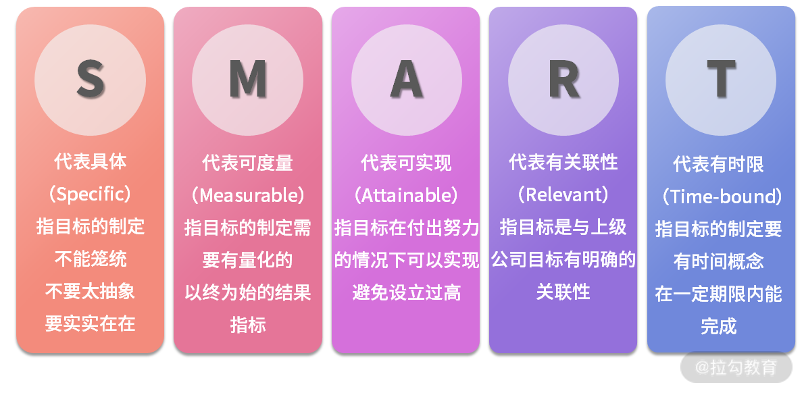
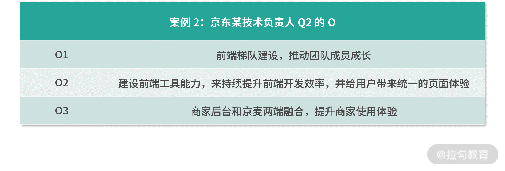
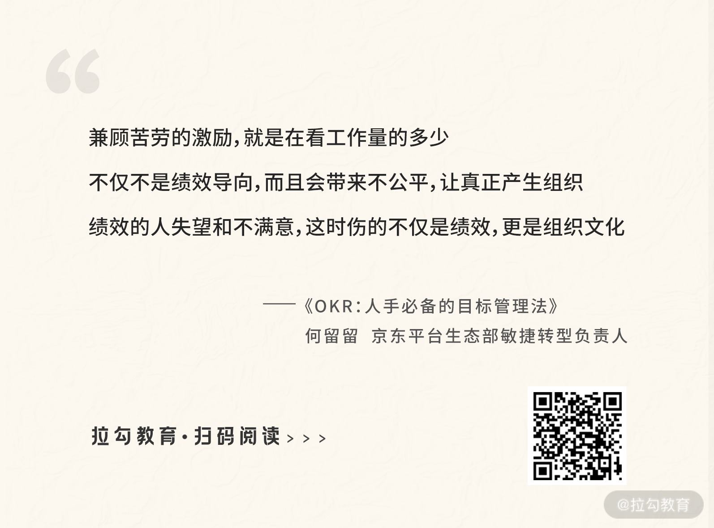
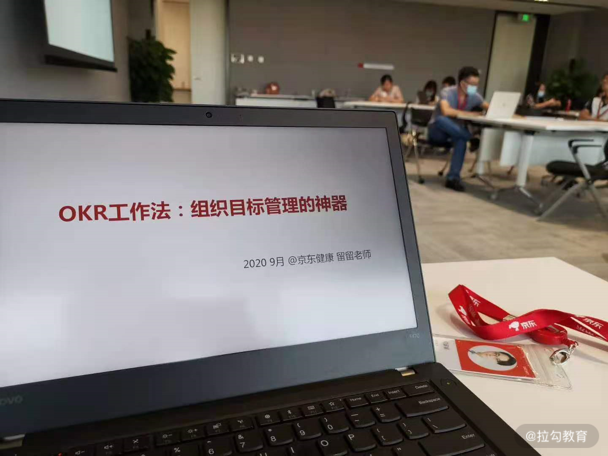
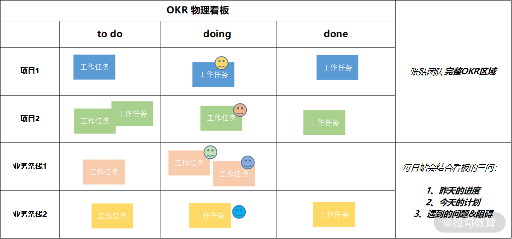

00 OKR 工作法：组织目标管理的神器
你好，我是何留留，京东平台生态部敏捷转型负责人，很高兴能在这里和你分享我在京东落地 OKR 的实战经验。
说起 OKR，相信你并不陌生，它起源于英特尔，发扬光大于谷歌。国外的领英、亚马逊、Dropbox、Zynga 等成熟和创业公司都在用；国内的华为、BAT、字节跳动、京东等互联网和高科技企业也纷纷在推 OKR，那么，OKR 为什么如此受欢迎呢？
用 OKR 迎战互联网下半场
随着流量红利的消退，增长越来越乏力，互联网进入下半场后，有越来越多的组织管理问题被放大。比如，我们经常听到组织中不同角色的吐槽。
- 员工：“感觉自己就是个干活的，根本不知道大部门的方向和做这些事的价值是什么。”
- Team Lead： “团队没什么活力，执行力不行。”
- 部门负责人：“计划总赶不上变化，KPI 定了也白定。”
- 决策层：“战略定了，时间过了大半，还没什么结果。”
诸如此类的问题，在 OKR 应用后都得到了有效解决。一位经理人曾跟我说，团队中竟然有人在用 OKR 自发做着老板没有要求的事情，感觉团队更有干劲儿了；也有团队成员找到我说，用了 OKR 感觉自己工作更加有意义，知道组织中的战略是什么，也知道自己所做的工作竟然可以支撑组织战略的实现，非常开心。
OKR 就是有着这样的魔力，为什么呢？从本质上来说，OKR 是一套目标管理方法论，是一个包括了从目标的制定，目标实现过程的管理，再到目标完成的效果评价的系统工程。这个闭环的目标管理过程几乎涵盖了工作中的方方面面，覆盖到了组织中各个层级的人。也就是说，用好 OKR 能给工作的各个环节以及各类人员都能带来不同的价值。
而在互联网的下半场，这把组织目标管理的神器能帮助我们解决的问题还有更多。
OKR 这把神器还“神”在哪些地方？
我们大部分人都是在组织中工作和成长，即使你去创业，本身也是在创立一个组织，而一个组织所能成立的理由就是去实现目标。所以管理好目标，对于组织发展和在组织中成长的人来说都非常重要。
此外，每个组织都面临内外部环境的挑战，一方面是如何灵活应对不断变化的外部经营环境，另一方面是如何建设好一个具备竞争力的内在组织。学好用好 OKR，这些问题都能迎刃而解。
（1）解决“唯 KPI 论”难题，灵活获得组织绩效
以往“唯 KPI 论”，只看结果数字的做法势必带来过程管理问题，导致文化差，激励不公平，领导力丧失。更重要的是，KPI 通常只用来管理既定的计划，忽略了外部经营环境的不确定性。试想，如果在计划赶不上变化时，你还紧盯着既定的 KPI，势必南辕北辙。
OKR 方法则通过建立一系列跟踪和回顾机制，以及对目标的持续检视和调整活动，能够灵活应对 VUCA 的经营环境，取得高质量的组织绩效。
（2）解决组织增长问题，保证组织目标落地执行
定战略，核心就是要能解决组织增长的问题，OKR 通过更加结构化的方式帮助我们进行战略管理，承载了组织战略所要的增长。
O 就是战略方向，KR 则是增长的量化指标。而 OKR 通过业务型 OKR + 非业务型 OKR 的组合，不仅关注财务和用户型的业务增长，也关注过程效率和能力提升等非业务型增长。所以，我认为 OKR 能够保障组织全方位增长，获得业务成功的同时，让组织更加健康发展。
此外，OKR 的制定遵循着基本的约束和生成规律：
- 通过自上而下对齐 O 把握方向，让组织中不同层级生成的目标都是一致的，形成合力；
- 通过 KR 对目标具体实现路径的讨论和共识，拆解和分工，有力地支撑了目标的完成；
- 通过对个人 OKR 生成的制定分类，让每个人的工作目标都能聚焦在与上级目标对齐上、与外部支持目标对齐上，保证了每个人的目标都是与组织目标相关的。
所以 OKR 结构化的管理战略，有效解决了组织增长的问题，并通过 OKR 的层层关联，互相支撑，有力确保了组织目标的落地实现。
（3）提升组织文化建设和领导力，激活组织中的人
OKR 持续的协同制定过程，以及团队 OKR 的通晒机制，有助于团队明确目标，强化信任关系，为组织带来协作和诚信的优秀文化。此外，OKR “制定—过程检视和调整—闭环评估”的工作机制，更是拉动了管理者和被管理者持续对目标制定和实现过程的沟通、确认和共识，建立了上下级良好的工作关系。所以我认为，用好 OKR 可以提升组织文化建设和领导力。
在个体层面，21 世纪是知识工作者时代，激活知识工作者，让他们更有动力，核心就是让他们的工作能够更有目标感、要有自主性、要能持续成长。OKR 首先就是从目标出发来思考工作的起点，鼓励创意和自主，改变了传统的“命令+控制”的管理方式，甚至激励大家自己定出想做的方向，最后结合组织目标和自己自主发起目标的实际完成情况来综合评价绩效，进行晋升和认可。这样一来，组织中的“人”开始被激活。
至此，相信你已经感受到 OKR 工作法的魅力。而这把神器想要在组织目标管理中有效且持续地发挥好“神力”，我们不仅需要对于理论的学习和理解，更需要实践的指导。
不少组织落地 OKR 却落成形式化，是因为缺少了对 OKR 全局视角的理解和实践，比如仅仅在团队维度进行应用，忽略了组织绩效的获得是一个整体；或者是引入了新的 OKR 目标和绩效管理方法后，组织中的流程、激励和文化却没有调整和升级，没有为 OKR 落地营造匹配的组织环境。久而久之，OKR 形式化就不可避免。
我从 2019 年中开始，有幸全程参与了京东引入和推动 OKR 落地的过程，并在京东零售、京东健康、京东物流三个子集团辅导过 OKR 转型，见证了 OKR 给组织带来的巨大价值。我特别期望能把我在京东落地 OKR 的这些干货、实践和总结，毫无保留地分享给你，希望能帮你更加有效地理解和落地 OKR。
我是如何设计这门课程的？
在这个专栏中，我依托京东和行业上多个 OKR 实战案例（字节、百度、快手等），帮你系统化理解 OKR 方法的运用，不仅有理论也有实操，不仅有案例也有提炼的方法论。
模块一，全局：OKR工作法。我将介绍 OKR 与其他目标管理方法的差异和联系，并从业务、经营、组织管理和人四个维度，全盘解读 OKR 火起来的真正原因，再通过老牌互联网公司百度李彦宏的 OKR 案例，帮你加深理解 OKR 与组织战略的关系，最后带你掌握组织中各个层级和个人 OKR 的生成规律。
当你理清了 OKR 的发展背景、运用的特殊意义、与战略的映射关系，以及组织中各个层级的生成规律，也就理清了 OKR 工作法是如何在组织目标管理中发挥整体作用的。
模块二，实操：O 和 KR 怎么写。实际写 OKR 时，相信你遇到过很多实操的问题，比如什么样的 O 才是有价值的？O 写了改、改了删，为什么总感觉没法一步到位写清楚呢？KR 需要怎么量化？到底写几个 O、 几个 KR 合适？
以上这些问题，我都会进行详细说明，并给你一个万能公式，助你下笔如有神。
模块三，落地：OKR 的流程和变革管理。这部分我将教会你一套建立 OKR 的流程机制，告别“OKR 根本就落不了地，用着用着就变成 KPI”的担心。
我会结合京东的案例，介绍 OKR 的设定和管理流程中核心环节的有效实践，保证你学完马上就能用，还会通过对比 KPI 和 OKR 的异同，帮你彻底搞懂这两者的区别和联系。
此外，OKR 作为一种新的工作方式，落地过程会涉及一系列变革，我也会向你介绍组织中应该如何升级激励和文化来匹配 OKR 的落地转型。
最后，推动 OKR 变革的过程一定还会遇到很多阻力和难点，我会为你提供相应的解决方案，帮你扫清落地障碍。
适合人群
- 如果你的组织即将导入 OKR，你肯定特别焦虑，OKR 到底是什么，到底该咋做，有没有一个相对完整成体系的 OKR 课程让我来学习参考一下？
- 如果你是一名经理人，肯定特别期望激活所带团队中的每个人，提高团队的执行力，领导团队取得业绩突破和创新。
- 如果你是部门负责人，一定特别期望部门业务能获得持续地增长，并想找到更好的方法来聚焦增长方向，设立增长指标，也一定特别在意战略目标确定后，如何才能保证落地不偏移。
- 如果你是负责绩效的 HR 同学，当 KPI 的绩效管理方法正变得越来越形式化和无效，你肯定特别期望能找到取得更好绩效的新的目标管理方法。
以上这些大家所面临的问题和期待，我都有详细的案例讲解和系统化说明，相信你一定会茅塞顿开，对照着我讲的 OKR 工作法去落地，一定会解决你的困惑，收获满满。
讲师寄语
OKR 正在国内外如火如荼的发展，将来势必成为每个组织都会使用的新的目标管理方法。此外，OKR 不仅能用在工作上，甚至也能用在你自己生活和学习上，比如给自己定个学习 OKR 的OKR，定个锻炼身体的 OKR，定个旅游的 OKR，你也可以通过 OKR 来持续自我管理好自己的生活和学习，实现更美好的人生价值。
01 目标管理发展：OKR 之前，大家都在用什么管理组织目标？
你好，我是留留老师。
咱们的第一课时，我想跟你分享组织目标管理经历的阶段及挑战，以便你能够对各阶段的目标管理方法和实践有一个全局的认识。
2020 年 3 月 12 日，在字节跳动成立八周年之际，张一鸣发布了内部信。在信中，他提道：
“德鲁克对于目标管理的思考，启发了我们对于组织有效性的重视和 OKR 的实践。”
这句话，有这么几个关键词特别值得我们关注：“目标管理”“组织有效性”“OKR 实践”。
我们先来看“组织有效性”。组织是否有效，就在于组织是否实现了目标。所以无论是字节，还是百度、京东、阿里或是腾讯，各个企业只有完成了目标，才有存在的意义，从而一个组织才能有效。
既然目标如此重要，那么我们就要对目标进行管理。一百多年来的管理学发展，都在揭示一个规律：管理就是为了提高效率。
所以，目标管理的意义就是为了让我们能在组织目标维度，提高目标从制定到落地的效率，而效率一定是跟方法论和优秀实践相关的。从而，我们可以看到诸如 OKR 目标管理实践，从 2000 年以后便席卷了各大互联网公司，并作为非常主流的目标管理方法论发展至今，这说明了 OKR 实践起到了帮助包括字节在内的组织更好管理目标的效果。
以上，我通过解释字节跳动下定决心应用“OKR实践”的前因后果，帮你理解 OKR 是“目标管理”的优秀实践，具有提高组织完成目标效率的价值。
那么，我们很多人就会问：提高组织目标管理的效率，难道只有 OKR 这一种实践方法吗？有没有其他的方法和实践的沉淀？接下来，让我们带着这样的疑惑，一起来盘点下组织目标管理都经历了哪些关键阶段，产生了哪些方法论，这些方法论的价值和面临的问题又是哪些。
第一阶段：MBO 目标管理
MBO（Management by Objectives，目标管理）由管理学大师彼得·德鲁克在 1954 年提出，他从实践的角度提醒我们，企业一定要重视和管理目标，否则就会面临效率低下的问题。
我们先不说目标实现过程中的问题该如何解决，也不提人要如何去激活，倘若目标都没有得到重视和跟进，那么组织就无法形成合力，如同一盘散沙，混乱熵增直到消逝于市场竞争。所以，组织中目标管理不仅要成为企业的管理制度、领导方式，还是企业提升绩效的重要保障。
MBO 的意义，就是从 0 到 1 提出了目标管理的重要性，帮助我们把组织管理的注意力拎回到起点，有时候我们只顾低头走路，却忘了抬头寻找方向，而方向对才是一个组织最终取得成功的根基。
那么，我们在注重目标管理的情况下，该如何把目标进行细化，从哪些维度来制定目标才能更好地沟通和跟进呢？这就涉及 SMART 原则了。
第二阶段：SMART 原则
SMART 是 5 个英文单词首字母的缩写，如下所示：

SMART 原则是目标设定的基本原则，换句话说，五个原则如果有一个没被遵守，或是没能做到，那么目标的制定和实现就充满了挑战。
比如目标不够具体，就会产生理解歧义；目标不能度量，就没法评价结果好坏；目标制定的不可实现，就是竹篮打水一场空；目标没有相关性，就是偏离了组织目标主航道没法形成合力；目标没有时限，也就没有压力，没有压力成本效率就是问题。
所以，正因为 SMART 方法是目标设定要遵守的最基本的五个维度，所以无论是后来产生的KPI、BSC 还是 OKR 方法也都要求符合目标管理的 SMART 原则，否则目标的制定就没法说清道明，实现也就不了了之。
第三阶段：KPI 关键绩效指标
随着组织管理的发展，20世纪 90 年代，用于组织绩效管理的实践出现了 KPI（Key Performance Indicator）方法。
KPI 是对组织战略目标的拆解，且在运用的过程中，KPI 符合一个重要的管理原理——“二八原理”。什么意思呢？也就是说，在一个企业的工作业绩创造过程中，存在着 “80/20” 的规律，每个部门和每一位员工的 80% 的绩效结果是由 20% 的关键目标完成的，抓住 20% 的关键，就抓住了主体，对关键任务进行分析和衡量，这样就能抓住业绩评价的重心。
所以在长期使用 KPI 的组织，KPI 被应用成了业绩考核指标，过分依赖对于数字的考核和关注，让我们失去了对于组织过程管理的重视。比如缺乏了文化、激励、领导以及团队相关的建设，用着用着就变得机械死板，丧失了组织活力。
此外，KPI 基于了一个更加重要的基本假设：从上往下拆解战略目标，同时指标也是从上往下对齐分解，如果考核的数字能够达到，组织就能获得成功，涉及 KPI 的业务和个人其实是获得了组织红利。伴随着 KPI 的完成，个体就更有发展机会和晋升平台，而未能分配到 KPI 的人员则会逐渐被边缘，成长性受限。所以，该基本假设忽略了如何让每个人可以为组织创造绩效的可能性，忽略了组织中的每个个体都为组织贡献力量，组织才会更加成功。
第四阶段：BSC 平衡记分卡
和 KPI 同时期出现的，还有平衡记分卡（Balanced Score Card，BSC），BSC 是从财务、客户、内部运营、学习与成长四个角度进行组织战略目标管理的方法，和 KPI 不同的是，BSC 将组织目标的完成和考核进行了系统化的分类。
BSC 不仅考虑了财务和非财务的考核因素，也考虑了内部运营和外部客户，同时也有短期利益和长期利益的相互结合。比如，每个季度上市公司都会发布财报，财报上的数据聚焦在营收、用户量等维度，这些都是财务型和客户类的指标，但是一个组织的运营效率、文化建设、能力沉淀也很重要，也就是说我们在组织目标的制定中要包含人力资源、组织效能的指标。
所以，BSC 从多个角度诠释了组织目标完成需要系统的思考，不能单一地看市场规模，还要注重内部效率和成长性。
然而，无论是 KPI 还是 BSC，仅仅是帮助我们解决了目标管理需要聚焦，以及目标的选择需要系统化侧重的问题。当下，面对不确定性的环境以及知识工作者的时代，目标管理又该如何做出调整以适应环境和人的变化呢？于是，OKR 出现了。
第五阶段：OKR 目标与关键成果
OKR（Objectives and Key Results，目标与关键成果），是一套明确和跟踪目标及其完成情况的沟通管理方法，由英特尔公司前首席执行官安迪 · 格鲁夫（Andy Grove）发明，其在自己所写的《格鲁夫给经理人的第一课》一书中诠释了为何创造出了 OKR：
- 我要去哪？答案就是目标（Objective）。
- 我如何能达到哪里？答案就是关键结果（Key Results）。
OKR 将组织目标管理更加结构化，每个目标都是由 O 和 KR 组成，O 是方向，KR 是所选择方向期望达到的关键结果。每个人的 O 和 KR ，基于了上下级的详细沟通并都能够结构化地写出来。同时 OKR 方法设立了一套工作方式来跟进、评价目标的过程和完成情况，如此就会反复促成大家对于目标内容的讨论、确认和共识。
更重要的是，OKR 对于目标管理的理念突出了灵活性。我们可以基于组织所处环境的变化，当突发和不确定性目标发生时，及时增加、修改和调整目标和关键结果。OKR 的这个特点就给组织目标管理带来了敏捷性，非常适合当下这个史无前例快速变革创新的时代。另外，OKR 理念还倡导自驱进行目标设定，自驱给组织贡献更多价值，这正好契合了知识型工作者需要进行自我管理的最大特征，对于激发和发挥知识型工作者的潜能具有很好的推动作用。
总结
至此，我通过第一课时带你了解了组织目标管理 5 个重要的发展阶段，你可以借助对于这 5 个阶段的理解和应用，让组织的目标管理变得更加有效。比如，在和团队讨论目标的时候，参考 SMART 原则，这样就减少了在制定目标时容易产生的歧义。再如，基于对 BSC 的理解，引导团队去制定关注组织效能和人力资源的指标，因为过程性的这两类指标对于一个团队和组织的长期发展也很重要。
另外，我也围绕组织目标管理经历的阶段、价值和问题给你总结成一个表格，方便你回顾和吸收今天的重点内容。

学习是“学”和“习”的共生体，所以接下来我想请你也来思考一个问题：
组织目标管理经历了这么多阶段，如今百度、京东、华为、腾讯、字节跳动、Uber、谷歌等国内外头部公司都在使用 OKR，那么 OKR 到底有哪些理念和特点？它又是如何帮助组织更好管理目标的呢？
02 OKR 价值：为什么互联网公司都在用 OKR？
你好，我是留留老师。
上一课时，我们提到，组织目标管理经历了 MBO、SMART 原则、KPI、BSC、再到 OKR 的多个阶段。那么，OKR 作为当下最流行的目标管理方法，它为什么这么火呢？其原因有四。
对业务：OKR 可以推动业务变革并支撑业务长期成功发展
OKR 源于英特尔，发扬光大于谷歌，其前期发展都离不开约翰·杜尔（John Doerr）的影子。在英特尔，杜尔参与了公司从存储器转型为微处理器的业务变革，而当时的 CEO 格鲁夫正是通过 OKR 的导入和应用，帮助英特尔管理层和员工设立业务转型的工作目标和优先级，最后成功完成了业务蜕变，奠定了英特尔成为全球芯片行业的领先地位。
在谷歌，杜尔作为谷歌早期投资者及董事局成员，在谷歌早期组织管理一穷二白的情况下把 OKR 引入到组织目标的管理中，牵引谷歌发展成为全球市值和品牌效应均名列前茅的搜索引擎公司。
跟你介绍这段 OKR 在英特尔和谷歌的发展史，是想说明 ：OKR 可以帮助我们促成业务的成功转型，并能持续地支撑组织成功发展。
假如 OKR 是无效的方法，那么谷歌从组织目标的管理和落地上就存在挑战，组织的发展也不可能有如今的业绩，相应的 OKR 也会被抛弃。
所以，OKR 火起来最重要的原因之一，正是它能在英特尔和谷歌发展起来的“根基”：OKR 支撑了组织目标的成功落地，可以推动业务成功转型，促成业务的持续成功。
对经营：OKR 可以灵活应对组织经营环境的 VUCA 化
2017 年 10 月份，京东 CEO 刘强东在一篇名为《第四次零售革命下的组织嬗变》文章中提到了组织面临 VUCA 环境的挑战。VUCA 指什么？就是不稳定（Volatile）、不确定（Uncertain）、复杂（Complex）和模糊（Ambiguous）。
随着数字化覆盖到我们日常生活、学习和工作场景的方方面面，环境的 VUCA 化变得更加突显，用户需求多元、多变且充满了未知，这就要求组织能够建立更加灵活响应的经营机制来及时跟上用户的变化。比如，随着大量网红在抖音上直播带货的流行，用户就开始偏好直播带货的购物体验，京东作为传统电商，就需要根据用户购物习惯的改变，及时增加京东直播的经营方式来满足用户多元的购物需求。
灵活的经营机制，首先就要从组织目标的制定和运转上来进行灵活调整。在京东内部，有着一套用于目标管理的绩效合同（即 KPI）。然而这套绩效合同的制定节奏是每三个月一次，且中途不允许随意变更，这就导致了我们缺乏管理不确定性的能力。甚至说，由于计划赶不上变化，每个季度末基于 KPI 型目标管理的绩效结果，跟实际的工作内容和产出已经大相径庭，根本无法通过 KPI 来反映组织真实的经营结果。
而 OKR 的目标管理理念则不同，其倡导建立灵活、敏捷目标管理响应机制。在整个目标实现过程中，允许根据实际情况对目标内容进行调整和修改，当出现更多机会的时候，我们可以通过新增 OKR 及时管理抓住机会。
比如，京东在拓展 2B 业务时，2020 年 8 月中下旬开启了和北汽的合作，并把这个合作目标拆解到了我所在的部门。但在 7 月初制定 Q3 季度部门 KPI 时，与北汽合作这个经营目标还没有发生，像诸如此类的经营目标变化，都可以用 OKR 及时管理起来。Q3 季度末进行绩效评估的时候，就能结合 OKR 整体把握部门和组织的经营绩效结果。这样，我们就能通过 OKR 帮助组织敏捷的管理经营目标，灵活获得绩效，而非 KPI 的僵化管理。
这就是 OKR 为什么这么火的原因之二：经营环境的 VUCA 化，我们急需一套 OKR 式灵活的组织目标管理方法，来灵活响应外部环境的变化，灵活取得组织绩效结果。
对组织能力：OKR 可以全面提升组织能力，制胜互联网下半场
美团王兴有一段关于互联网上半场和下半场的精彩论述：上半场靠红利，下半场就得靠组织能力。 岂止是互联网，整个中国的经营环境，从改革开放至今各个行业大都处于蓝海阶段。但凡一个做经营的人，只要敢闯肯干，都会有不错的业绩。
但如今，各行业各领域的市场都趋近饱和，同一行业的不同企业都是在对现有的市场份额进行存量争夺，此消彼长。这时拼的，不仅是对市场和行情的理解，更是各个组织的管理能力，从成本效率上来获得竞争优势。从而，我们要从互联网上半场的粗放式组织运作，转向下半场的精细化组织管理。
那么，一旦提到组织管理的能力，就离不开领导、激励和文化三个维度的建设。
OKR 的工作方式，建立起了基于目标从制定、过程评审，再到闭环的管理流程。通过该流程，拉动了上下级对于目标制定和实现的沟通节奏，定期跟进目标完成过程，互相探讨对于实现工作目标的期望和问题，打造了一个良好的上下级工作关系，提升管理者领导力。
此外，OKR 鼓励个体自驱对组织目标进行思考和制定，在目标制定维度充分融入个人的想法，其实是对个体的最大激励，由 “要我干”变成“我要干”，就提升了员工执行力。最后，应用 OKR 的组织，都会把 OKR 通晒在某个系统内，大家彼此都能看到，方便沟通目标对齐以便达成合力，在制定OKR时也会横向拉着多个职能部门一起协商和确认，这些都有助于组织沉淀协作、透明、诚信的文化。
所以，通过 OKR 的应用，可以帮助一个组织中的员工提升执行力，管理者提升领导力，并沉淀优秀文化，使得组织能力全面提升。
这就是 OKR 为什么这么火的原因之三：OKR 提升了组织中管理、领导、激励和文化建设的能力，有利于组织在互联网下半场的竞争中取胜。
对个人：OKR 可以激活组织中的知识工作者，助力组织绩效突破和创新
对于知识工作者，使用“胡萝卜加大棒”（做得好就给胡萝卜，也就是奖励，做得不好就用大棒，也就是惩罚）这么简单粗暴的管理方式，会忽略知识工作者创造更高绩效的过程因素，需要给予知识工作者更多的自主和创造空间。
我曾在京东一个产研部门做过一个测试，让大家写出驱动自己工作的主要动力有哪些？后来获得的数据显示，作为一个全部以知识工作者为主的软件产品开发团队，其排名前三最能驱动自己工作的动力为：要有目标感、要获得成长、要有更多自主性。其中，对于自主性，大家就是期望能有更多自主决定得做事权利，而不是什么事都被他人管控、被牵着鼻子走。
OKR 的出现正好契合了知识工作者对于工作更能产生绩效的追求，首先 OKR 就是从目标出发，让每个人都能对组织目标有所了解，然后鼓励个体自驱为组织目标的完成贡献更多好的想法，甚至鼓励每个人能自发生成新的方向，为组织绩效带来创新和突破。最后，OKR 基于组织目标和个体自驱目标的完成情况，通过综合评价绩效结果来进行人员激励和晋升。
比如，在季度初制定每个人绩效目标的时候，我们确实需要从上往下对齐战略目标，但是如何实现这个目标，就倡导员工自己拿主意想办法，管理者在一旁给予支持和帮助，而不是强加干涉，说一言堂。 另外，除了从上往下对齐的战略目标，我们也鼓励大家制定完全自驱的目标，只要对组织有价值就行。最后，在季度末给员工打绩效时，不仅仅参考和战略对齐的目标完成情况，也参考大家自驱目标的完成情况，来进行绩效的综合评价。
所以，在组织中，自己从事的工作目标与自己的想法息息相关，甚至目标是由自己来自发确定，就解决了知识工作者需要目标感和自主性的问题，通过从上往下对齐的战略目标和自驱目标的完成情况进行综合绩效评价做激励和晋升，就解决了知识工作者需要获得成长的问题。
这就是 OKR 为什么这么火的原因之四：OKR 激活了组织中的知识工作者，为组织带来更多绩效创新和突破。
总结
以上，我分别从业务、经营、组织能力和组织个人的四个视角，和你介绍了 OKR 为什么这么火的四个原因，这也是互联网公司为什么都在用 OKR 的根因。
既然 OKR 这么火，我相信有一些小伙伴已经实践过了，那你有什么实践心得和困惑？欢迎你在留言区和我交流。还没有实践的小伙伴，欢迎你在留言区罗列出组织中遇到的痛点和挑战，我和你一起来思考，看看 OKR 是否可以帮你解决这些问题。
OKR 除了以上的价值，在 O+KR 的结构中还隐藏了一个大招，这个大招是什么呢？下一课时我将介绍“OKR 如何解决组织增长的问题”。
03 OKR 与战略：OKR 如何解决组织增长问题？
你好，我是留留老师。
如上一节所说，OKR 之所以火，互联网公司为什么如此热衷 OKR，是因为 OKR 可以帮助我们在 VUCA 环境下取得更好的经营效果，并能激活组织中的个体。
那么，组织中需要管理的目标到底跟什么相关？OKR 又是如何解决组织增长问题的呢？这两个问题如果不思考清楚，再好的目标管理方法和实践，可能只是在形式上做文章，而不能真正解决组织长期发展的根因问题。
组织的目标是如何确定的？
组织经营者在从事一项事业时都应该有自己的经营理论，这个经营理论首先需要解决三个基本问题：
- 一是组织的愿景是什么？
- 二是组织的特殊使命是什么？
- 三是完成组织使命所需的核心能力是什么？
愿景：组织最终想要去往的目的地，走向的远方，在大环境中想要的角色和定位，就是组织的愿景。 使命：是一个组织因为什么而存在，是一个组织存在的价值理由，是支撑愿景实现的价值取向。 核心能力：一个组织会面临具体的行业领域的细分，细分领域所拥有的知识和技术沉淀，就是一个组织的核心能力，正是因为拥有了核心能力，组织履行使命才能有保障。
给你举个京东案例。
- 京东的愿景：成为全球最值得信赖的企业。
- 京东的使命：技术为本，致力于更高效和可持续的世界。
- 京东的核心能力：以供应链为基础的技术和服务公司。
京东的愿景，就是京东想要在整个行业和环境中的定位，是京东的终极奋斗目标。而想要成为全球最值得信赖的企业，就需要京东对这个世界有价值，这也是京东的使命：致力于更高效和可持续的世界。
使命是京东实现愿景的价值基石，不能让世界变得高效和可持续，京东便没有存在的意义，从而也就失去了实现愿景的机会。
最后，供应链是京东的核心能力，正是因为供应链的核心能力，才能让京东履行使命有保障，供应链是京东业务选择所依赖的能力基础，用来指导未来业务的扩展和创新方向。
所以，我们可以发现，组织长期目标对应的就是组织的愿景，而阶段性支撑愿景实现的目标就是基于组织核心能力的选择，我们常把这个选择称作战略。那么，基于组织核心能力选择的战略方向，对于组织的意义又是怎样的呢？
战略就是解决组织增长的问题
2020 开年，京东零售 CEO 徐雷进行了演讲，其确定了京东零售的主基调就是“有质量的加速增长”，并表示：“不成长便退场，加速增长是我们的必然选择。2020年，京东零售将在交易额、收入、用户、利润这四大核心指标上均实现加速增长。”而围绕增长主基调，京东所选择的三大必赢之战分别是：全渠道、下沉新兴市场和平台生态。在京东，战略选择的方向，内部被称为“必赢之战”。
从京东零售 CEO 徐雷的分享中，我们可以得到三个非常重要的对应关系：
- 战略确定了组织目标方向，对应了上述的三大必赢之战；
- 所选择的业务方向需要解决增长的问题，这就是上述提到的主基调；
- 增长体现在指标上，对应了上述“四大核心指标”。
我们把这三个对应关系串成一句话：由战略确定的组织目标，需要帮助组织解决增长的问题，并把增长反映在多维度的指标上。
换成京东的这个案例就是：由战略确定的“全渠道、下沉新兴市场和平台生态”这三个组织目标，需要帮助京东解决“有质量的加速增长”这个问题，并把增长指标反映在“交易额、收入、用户、利润这四大核心指标上”。这就是战略对于组织的意义，无论战略如何选择，最终都要增长。
在这里，我想提醒你：作为一个商业组织去实现战略目标（增长），还要匹配相应的能力。这个能力包括业务能力和人员的能力，以及组织文化、效率等方面的考虑。所以战略所选的方向以及带来的增长仅围绕交易额、收入、用户、利润这四大核心指标是不够的。所以，徐雷在 2020 京东零售开年大会上还表示：为了达成有质量的增长，京东还将在组织优化、文化建设、人才管理等方面进行全面优化、创新发展。
也就是说，我们不仅需要关注财务的指标，也要关注非财务的指标，不仅要关注业务上的，也要关注组织上的。有了以上的探讨作为基础，我们来看 OKR 到底是如何解决和支撑组织增长问题的呢？
OKR 与组织战略的关系
首先，我们把目标管理 OKR 方法进行结构化展开：
OKR = Objective + Key Results
Objective 就是目标，Key Results 就是多个关键结果。结合本课时上两个小节的分析，OKR 中的 O 对应的其实是战略确定的组织目标，KR 则对应的是所选战略方向的增长指标，即：
OKR = 战略方向（O） + 多个增长指标（KRs）
接下来，我给你举一个百度李彦宏的 OKR 案例，看看 OKR 是如何与百度战略目标相匹配，又是如何支撑组织目标增长的。
2019 年春节前夕，百度元老崔珊珊在百度内部掀起了一场 OKR 变革风暴，这场风暴席卷了从最高决策层到最基层的几乎所有百度员工。作为百度的掌舵人，李彦宏也在第一时间为自己制定了 OKR：
通过李彦宏的 OKR，我帮你做以下三点分析：
- 作为百度创始人兼 CEO，李彦宏的目标（O）就是百度的战略方向，一共包括了三个战略：打造移动生态、跑通 AI 商业模式以及提升组织能力。
- 李彦宏的三个目标（O）中，不仅仅包括了移动生态和 AI 赛道的业务目标，也包括了提升组织能力维度的非业务目标。 换句话说，组织战略方向的选择不能仅仅局限于业务方向，也需要综合考虑组织能力的方向。
- 李彦宏的每个目标（O），都有对应的 3 个 KR，3 个 KR 就是 3 个维度的增长量化结果。也就是说，每个战略方向，都需要制定多维度的增长指标。
这就是 OKR 与组织战略目标的关系，O 是选择的战略方向，KR 是所选方向的增长量化结果。每个组织会有多个战略方向（O），每个战略方向会有多个增长指标（KR）。
总结
这一课时，我主要帮你解答了三个核心问题。
- 通过什么方式来确定组织长短期目标？
组织长期目标对应的就是组织的愿景，而阶段性支撑愿景实现的目标，就是基于组织核心能力的选择，而这个选择就是组织的战略。
- 战略解决了组织什么核心问题？
战略要帮助组织解决增长的问题，并把增长反映在多维度的指标上。但要注意：战略的选择以及带来的增长我们不仅仅需要关注财务的指标，也要关注非财务的指标，不仅仅要关注业务上的，也要关注组织上的，这样才是关于组织目标如何选择以及组织如何增长的系统思考。
- OKR 与组织战略的关系是什么？
O 是选择的战略方向，KR 是所选方向的增长量化结果。每个组织会有多个战略方向（O），每个战略方向会有多个增长指标（KR）。
那么，你所在公司的使命愿景是什么？阶段性战略又是什么？战略如果继续拆成 OKR，你们会拆解成几个 O，几个 KR 呢？
04 OKR 生成：各层级的 OKR 要遵循什么规律？
你好，我是留留老师。
上一课时，我介绍了 OKR 的应用可以帮助我们更好地管理和制定组织战略目标，通过 OKR 的结构化拆解去解决战略所要的增长问题。那么，当一个组织战略确定后，我们是如何通过层层对齐和拆解，帮助组织战略落地的呢？这个时候我们就要掌握 OKR 在组织中各层级的生成规律。
掌握组织中不同层级 OKR 的生成和对齐规律，有利于我们制定支撑组织战略和对于组织有价值的 OKR，否则组织从上到下就无法形成合力，战略落地也就存在挑战。接下来，我通过亲历案例，帮你掌握这些规律。
公司、部门和个人 OKR 之间的关联
在 2019 年，我帮助京东平台生态部主持了一次战略会，在现场，部门 VP 以及各个二级部门负责人进行了非常富有成效的探讨，最终产出了部门的多个战略方向，如下：
O1：构建自营生态 O2：构建店铺价值 O3：打造平台价值主张 O4：多样化平台治理 O5：提升平台基础能力 O6：赋能商家，提升效率 O7：提升组织协同能力 O8：促进商家成长
我们通过战略会的共识，产出了生态部 8 个战略方向，也就生成了部门 8 个维度的 O。此外，战略会上，部门 VP 也谈及到了京东零售的四大必赢之战，如下：
O1：下沉市场 O2：全渠道 O3：平台生态 O4：大中台
京东零售的四大必赢之战也就是京东零售的四个战略方向，对应着，就是生成了公司层面 4 个战略维度的 O。其中的平台生态方向就是指我们部门的业务，VP 还强调，作为承接集团战略的平台生态部，在京东未来的发展中会扮演更加重要的角色。
最后，我作为京东平台生态部的一员，我希望帮助部门做好敏捷和 OKR 转型来提高组织的效能。所以，再来看看我个人在 2019 年的 3 个工作方向：
O1：提升京东敏捷影响力 O2：提高产研效能 O3：落地 OKR 方法
至此，我给你介绍了 3 组 OKR 的案例。案例中不仅有公司层级的战略方向，也有部门维度的战略目标，还涉及了个人的工作方向。为了更好地诠释他们之间的关系，我画了一张示意图：
一个公司由于组织架构和层级的存在，至少有三个层级的 OKR。如果用以上的案例来对应，那么公司级 OKR 就对应着京东零售的 4 个必赢之战，部门级 OKR 对应着平台生态部门的 8 个战略方向，个人 OKR 则对应我自己的 3 个工作方向，具体可以用下图来表示。
而且，这三个层级的 OKR 互相影响，互相支撑。我相信眼尖的小伙伴已经发现，京东零售 4 个必赢之战包含了平台生态的业务方向，也就是说公司级制定的战略方向影响着部门级的战略制定，而作为平台生态部的 8 个方向之一的“提升组织协同能力”则与我制定的 3 个工作方向息息相关。平台生态部的其他方向则由其他负责人认领并具体 OKR 化，至于每个 O 中包含的多个 KR 内容，则需要持续沟通达成共识即可。
上面这张图系统化呈现了各个层级的 OKR 制定和上下对齐的把控，可以让组织刚性的战略目标落地不偏移，这也是我们要掌握的公司、部门和个人 OKR 的生成和关联规律。
既然个人和部门的目标中都要承载公司的战略，可为什么我在京东又看到一些部门的工作目标和上述的公司四大必赢之战好像一点关联都没有，这又是怎么回事呢？
为什么有的部门目标和战略没有对齐？
除了主持过部门战略会，在一次和 HR 合作的制定 OKR 工作坊上，我带领平台生态部 HR 侧的小伙伴产出了 HR 部门的工作方向：
O1：引进高职级人才 O2：提升员工专业力和通用力 O3：建设和传播文化 O4：沉淀组织机制
当时做完工作坊，我很诧异，HR 的工作方向尽然和上述公司级以及部门级战略方向并不一致，这是为什么呢？
我们都知道，一个商业组织最重要的是要有核心的业务能力定位，并通过该核心业务能力来确定战略，选择业务的增长方向。然而，组织中一个业务目标的实现，最终靠的还是人，所以组织中人员能力的持续提升以及影响人行为的文化的持续建设对于组织的长期发展也很重要，在当下国内的组织中，把这部分职责划给了 HR 部门，在京东属于 CHO 体系（组织中负责人力资源建设的部门，职责包括绩效、薪酬、员工福利、培训等诸多方面）。
再换句话说，我在上面提到的京东零售的战略目标是公司级的业务增长 OKR，一般由公司 CEO来关注并确立。而 HR 侧的小伙伴的 OKR 是非业务型的增长 OKR，属于 CHO 体系的战略目标，一般由公司 CHO 来关注并确立。只是从优先级上来说，一个公司的业务型 OKR 肯定比非业务型 OKR 重要，因为只有业务型 OKR 的成功执行，公司才会有营收，有了营收才有支付组织能力建设的成本，但这两者都缺一不可。
我们一起回想下，在上一课时我列举的百度李彦宏的 OKR 案例中，百度的三大战略方向，不仅包括移动生态和 AI 商业模式 2 个业务类 OKR，也包括组织能力提升的非业务类 OKR，同样也是这个道理。
所以，OKR 生成的另外一个规律，就是组织中 OKR 的类型不仅包括了业务型，也包括了非业务型。但无论是哪种类型 OKR，最终落地都要靠人去执行。那么，个人 OKR 的生成包括哪些方面呢？
个人 OKR 的生成规律
个人 OKR 的制定，可以有上下对齐、自驱以及外部支撑三种来源。为了帮你更好地理解这个生成规律，我依旧列举个人的案例来进行说明。
| 我的上级 OKR 示例 | |
|---|---|
| O1：产研效能提升 | KR1：敏捷成熟度达到85分 |
| KR2：敏捷团队OKR覆盖度80% | |
| KR3：需求平均交付时长为32天 | |
| KR4：重点接口自动化覆盖达70% | |
| O2：业务组件化建设 | |
| O3：平台生态核心项目支持 | |
| O4：商品平台能力提升 |
如上表，我的上级 OKR 包含 4 个 O，我把 O1 进行了具体描述，分为了 4 个 KR。接下来，来看一下我的 OKR：
| 我的OKR示例 | |
|---|---|
| O1：通过敏捷能力建设，提高产研运团队的产品需求交付效率 | KR1：通过 Scrum 方法、Kanban 方法、敏捷需求实践3个维度的敏捷能力建设，每个季度保证 24 个敏捷团队的敏捷能力达 85 分 |
| KR2：对每个季度的敏捷能力评估得分较低的团队进行辅导，每周持续跟进2个团队的改进措施并以邮件的形式进行改进的跟踪和落地 | |
| O2：OKR工作法落地和执行，保证业务目标高质量增长 | KR1：通过季度初 OKR 制定-季度中 OKR 评审-季度末 OKR 闭环评价的流程落地，帮助整个部门 OKR 的应用覆盖达到 80% |
| KR2：在本季度通过 5 场培训和 20 场团队级 OKR 辅导，培养 10 名团队级后续能带领团队独立运转 OKR 工作法的 OKR 教练 | |
| O3：通过多元化的方式，提升部门和京东的敏捷影响力，并赋能其他部门提升敏捷和OKR的应用能力 | KR1：对京东外，通过图文、视频等多元化的方式，每月产出一个敏捷类 /OKR 类文章，每个文章在微信域平均阅读 UV300 以上 |
| KR2：对京东内，以线上/线下的方式，给京东兄弟部门分享培训敏捷/OKR 方法，每月至少一次 |
我的 OKR 则包含了 3 个 O，每个 O 继续拆解成了 2 个 KR。从上级和我的 OKR 中，我们可以得出以下个人 OKR 的生成结论：
1、个人的 OKR 部分来源于上级的 OKR 拆解，在这个案例中，上级 O1 中 KR1 的敏捷成熟度和 KR2 的 OKR 覆盖度对应着我的 O1 和 O2，我从上往下对齐形成的个人 O1 和 O2 继续拆解成能支撑这两个目标完成的 KR。
2、个人的 OKR 部分来源于个体职责的自驱，就像我 O3 中提到的提升敏捷影响力，上级的 O是没有该方向的，所以个人 O3 中的敏捷影响力的塑造是基于本人能力以及组织的发展，完完全全是自驱希望给组织带来的绩效价值。
3、个人的 OKR 部分来源于对外部的支持，在京东内部有很多部门会找我去培训敏捷和 OKR 方法，对应着我在 O3 中提及的赋能其他部门能力提升方向，这一类的 OKR 就属于外部支撑型。
这就是生成个人 OKR 的规律，当工作中个人去制定 OKR 时，需要注意从上往下的对齐拆解以及横向的支持，并能基于自己的能力自驱给组织创造额外的绩效价值，通过个人自驱型 OKR 的设立，就能把 OKR 鼓励挑战和自驱的理念落地。
总结
今天我和你分享了我亲身经历的 OKR 产生过程，揭示了组织中各层级 OKR 的生成规律。到此，相信你也已经知道个人的 OKR 和领导、公司发展之间的关联。
概括起来，就是以下这 3 个重要结论：
- 组织中各个层级的 OKR 互相影响，互相支撑。如果各层级各自做各自的，就无法通过 OKR 帮助组织战略目标更好地落地。
- 战略目标分业务型和非业务型，OKR 的生成也对应着有业务型 OKR 和非业务型 OKR。组织中，不仅要关注业务型 OKR 的制定和落地，也要关注组织发展和能力建设的 OKR。
- 个人 OKR 由三个部分生成，分别是：与上级 OKR 对齐拆解、个体岗位职责自驱、外部支持相关。
那么小伙伴，在你的组织中，是通过什么方法来让战略目标从上往下对齐落地的呢？又是采取什么方式去制定个人目标呢？你的组织在制定战略方向时关心组织能力建设吗？欢迎在留言区分享你的经验，也欢迎你留言和我交流，我们一起来探讨下通过 OKR 生成的规律能否解决你的问题。
在掌握了 OKR 生成的规律后，你是不是已经迫不及待地想要写一写 OKR 了？别急，写 OKR 也有很多要点。学完下一讲，我相信你在写 OKR 时会茅塞顿开，下一课时我将介绍“怎么样才能写好 OKR”。
05 O：什么样的 O 得领导赏识？
在上一节，我给你介绍了组织中各个层级的 OKR 生成规律。通过该规律，可以帮助我们在制定 OKR 时，保证和组织的战略对齐并通过额外的自驱方向来支撑组织发展。那么，一旦涉及某个具体的 OKR，选择哪些 O 对于组织是有价值的，有没有规律可循？有没有“万能公式”，来帮助我们更高效地编写 KR 呢 ？这就是接下来我要帮你解决的问题。
首先，我们来看一个快手的 OKR 案例。看案例的时候，你可以留意 O+KR 这种结构化的表达方式，以及 KR 的呈现特点，以便你对于 OKR 的完整写法有一个概貌上的了解。
2019 年 6 月 18 日，一场在快手内部被称作“K3”的战役正式打响，创始人宿华和程一笑在全员内部信中表达了对公司现状的不满，并给出了“战斗”的明确目标：2020 年春节前后，3 亿 DAU。随后，快手采取了一系列的行动来去完成 K3 目标，我梳理了下，如果把快手的 K3 目标 OKR 化，可以梳理成如下所示：
O：通过“K3”战役，在 2020 年春节前后，快手达 3 亿 DAU。 KR1：依靠极速版，春节前 DAU 峰值突破3 亿。 KR2：通过丰富垂类内容、大量签约 MCN、进行活动策划和运营、给予流量扶持等做法来保持留存率，保证春节前 DAU 峰值突破3 亿。 KR3：依靠春晚红包，春节后三个月 DAU 平均值达到3 亿。
这是一个典型的 OKR 写法，通过 O 来描述我想要做什么，然后对应着 3 个具体的 KR 来支撑 O 的实现。 我相信，看过 2020 年春晚的同学一定会知道，快手和春晚确实是通过红包的形式展开了合作，并且给快手拉新了大量的用户，这就是其中 KR3 的落地。
回到我们工作当中，O 和 KR 的写法有没有一些基本遵循的原则和规律呢？我们首先来看 O，对于目标，我们很少有人能在一开始就思考得非常清楚，总是感觉做着做着，目标才渐进明细，这其实就是 O 的基本属性——迭代属性。
O 的迭代属性
接下来，我通过列举个人 2020 年 Q1、Q2 和 Q3 季度某个 O 的 3 种写法来说明 O 的迭代属性。
Q1 该 O 的描述：京东 OKR 工作法落地和执行，帮助全部门高质量完成业务目标。 Q2 该 O 的描述：京东 OKR 工作法落地和执行，高质量完成业务目标，灵活进行组织绩效管理。 Q3 该 O 的描述：京东 OKR 工作法落地和执行，高质量完成业务目标，灵活进行组织绩效管理，并激活组织中的个体。
这三个 O 其实属于同一个方向，就是帮助组织落地 OKR 工作法。但你会发现，每一个 Q 我的描述都会变，因为随着时间的推移，我对 OKR 方法实践理解的加深，会发现这个方向越来越多的价值，从而对于 O 的描述也在迭代升级 。
在 2019 年年底制定 2020 年 Q1 目标的时候，我期望通过 OKR 工作法，推动部门关注目标和关键结果的达成，帮助整个部门更好地去完成业务目标，这是 OKR 最基本的价值。由此，就形成了 Q1 的描述。
随着整个 Q1 的实践和深入的理解，我发现 OKR 不仅可以帮助组织管理好既定的业务目标，当我们发生目标变化或者新增目标的时候，OKR 自身所带的灵活性可以帮助组织灵活地进行绩效管理，这是对于该方向新增的认知迭代升级，所以我在 Q2 制定该方向的 O 时，就增加了“灵活进行组织绩效管理”的字眼。
那么到了 Q3，我之所以在该方向的 O 中增加“激活组织中的个体”，是因为 OKR 倡导的自驱和挑战理念引导了 Q2 团队中的一些个体自驱在为组织做着更多贡献，释放了组织中更多个体的潜能，激活了组织中的个体。
所以，我们个人在写 O 时，不用纠结于一次性就想写的很完美，因为随着对某个工作方向的持续实践和理解，我们对于该方向所产生的价值和意义在认知上就会迭代升级，然后更新改善 O 的描述，让描述逐渐变得更加准确，这就是 O 写法的迭代属性。而至于我们在什么时候去迭代调整 O 的描述，可以及时修改，比如立马想到就立马改，也可以定期修改，比如每周或每月来迭代修改 O。
当然，除了 O 的写法可以迭代着去进行完善之外，想要写好 O ，我们还需要注意遵守一些原则。
写好 O 需要遵守的 4 个原则
我们在写 OKR 中的 O 时，需要遵守这 4 个原则：纵向和横向对齐、本季度切实可行、聚焦性以及需要融入自驱&挑战理念。
1. 纵向和横向对齐
在之前所讲“OKR 生成的规律”一节，我们知道，O 需要对齐组织或者部门从上往下拆解下来的战略方向，我把上下级方向上的一致性称为在制定 OKR 时需注意的“纵向对齐”，有了纵向对齐才能让组织中的战略落地，否则无法形成组织合力。
此外，个人的工作当中，有很多需要外部支援的事情，我把这种外部依赖和支持的方向称为在制定 OKR 时需注意的“横向对齐”。比如，我在制定自己 OKR 时，就会思考在纵向上如何落地部门战略关心的效能提升方向，在横向上也会想其他部门对于培训有没有需要我支持的方向。这就是我们在写 O 时需注意的纵向和横向对齐。
2. 本季度切实可行
从 OKR 的制定节奏上来说，国内大部分包括京东在内的组织都是按照季度来制定的，所以我们每季度中所写的 O 要能在本季度可执行，不能执行的就不要写。比如，公司定了一个年度销售1个亿的挑战目标，我们在定第一季度 OKR 时，就要对这一个亿进行拆解，写一个 Q1 能完成的目标放到 OKR 中，而不是把一个亿直接作为 Q1 的 OKR。也就是说，在定季度 OKR 时，O 一定是切实可行的，本季度努力一把是够得着、达得到的，而不是制定根本就完成不了的“虚荣目标”。
3. 聚焦性
在日常的工作当中，我们每个人可能会有多个工作方向，对应着，在制定 OKR 时，就会产生多个 O。如果按照季度来定 OKR，那么，一个人大概多少个 O 合适呢？根据我在京东带领部门进行 OKR 工作法转型的经验来看，我们每个人 O 的数量在 2~5 个是相对合理的。
如果一个季度只有一个 O，那工作量的饱和度会有问题，或者这个 O 中包含了很多内容，我们可以进行归类拆分出多个 O 出来。但一个季度设定的 O 过多，则又会出现不聚焦的情况。因为一个人的精力和一个组织中的资源是有限的，最后就会导致这么多 O 都没做出好的效果。
4. 融入自驱&挑战理念
OKR 带给组织的其中一个价值，就是希望能激发组织中个体的活力，让每个人都能为组织创造价值，贡献力量。所以我们在写 O 时，就要能落地 OKR 的这种理念，也就是说，在 O 中倡导鼓励包含自驱&挑战的方向，不能说老板让我做什么我才做什么，只完成老板布置的任务，要能自发着去挑战其他一些额外的对组织有价值有突破的工作。
比如，在我们部门制定 2020 年 Q3 OKR 目标时，测试团队的某个人的 OKR 中不仅定了上级所要求的既定测试任务的 O，还自驱制定了“精准测试”这一测试专业化能力提升的 O。当把 OKR 所倡导的自驱&挑战理念落地，你会发现整个组织中的所有个体都被盘活了。
O 遵循了这四个原则，就确保了我们在组织中制定 OKR 的有效性。
- 注意纵向和横向对齐，不仅关注组织战略目标落地，也要支撑外部目标的协作和完成；
- 遵守切实可行的原则，确保 O 实现的合理性，杜绝“虚荣目标”；
- 把控 O 的数量，聚焦高质量的产出，以防什么都做却什么都做不好；
- 在 O 中融入自驱&挑战理念，让每个人都能发挥价值，创造出更多绩效。
华为创始人任正非曾说“方向大致正确，组织必须充满活力”。这句话，正好对应了我们上述内容。那么，这个“大致正确”的方向，到底可以选择哪些类型才是对于组织有价值的呢？
O 的选择类型
为了让你能更好地理解这个部分的内容，接下来，我列举业务维度和技术维度的两个案例，来说明选择什么样的 O 对于组织才是有价值的，换句话说，这些 O 的价值性都已经被京东验证通过，你看案例的时候，可以多关注我所举案例 O 的价值类型。
这是京东某业务负责人 Q2 的 O，该业务负责人是负责京东 ISV 开放业务（即通过独立软件开发商为京东商家定制化开发相关产品&服务），在其 Q2 的 OKR 制定中，写了 4 个方向的 O。

如果更加概括地来分析这 4 个方向，我们可以发现：
- O1 最终目的是提升 GMV，即营收方向；
- O2 围绕的是业务能力建设和提升方向；
- O3 还是在说商业化的事，只不过 O1 是商家侧的营收，而到了 O3 是 ISV 的营收；
- O4 则与 618 备战相关，最终目的是提升用户体验。
总结下来，该业务负责人 O 的方向聚焦在这 3 类：营收型、能力提升型以及用户型。
接下来，我们再来看一个技术负责人的案例。该技术负责人是负责前端开发团队的管理和专业化能力提升，在其 Q2 的 OKR 制定中，写了 3 个方向的 O。

我们依旧来概括性地分析下这 3 个方向：
- O1 的目的是团队成员的成长，其实就是提升员工能力；
- O2 的目的是通过建能力，来提升开发效率，并为了用户体验；
- O3 中的商家也就是用户，那么目的也是为了提升用户体验。
总结下来，该技术负责人 O 的方向聚焦在 3 个类型：能力型、效率型和用户型。我把以上两个典型案例的方向进行汇总，就形成了 O 的 4 种类型。
- 营收型： 比如案例 1 中提到的提升商家 GMV 和 ISV 商业化金额。
- 用户型： 比如案例 1 中提到的 618 备战，提升用户购物体验，以及案例 2 中提升用户使用页面的体验。
- 效率型： 比如案例 2 中提到的开发效率。
- 能力提升型： 比如案例 1 中提到的提升业务能力以及案例 2 中提到的提升员工能力。
这 4 个类型，其实就是组织绩效的构成。一个商业组织，不仅仅要能营收，也要关注用户价值，不仅仅要内部效率，也要关注能力的沉淀和提升。而这 4 个类型的选择也对应了我开篇提到的，战略的选择要包括业务型以及非业务型的方向。业务型的方向就是营收、用户价值和业务能力沉淀的类型。非业务型的方向就是效率和组织中人员能力提升的类型。
如果我们要从这 4 种 O 的类型中进行优先级排序，显而易见，对于商业组织而言，营收是第一位的。如果没有营收，那么一个组织就很难长期存活，从而就没有足够的资金投入来持续提升用户体验，满足用户更多需求，更没有资金投到持续效率提升和能力沉淀方面。
排在第二位的是用户型的 O，一个商业组织能营收是因为持续解决了用户的问题，给用户带来了持续的价值和好的体验，从而用户才愿意持续为组织提供的产品&服务付费，这些会反应在用户满意度、用户量等方面。
最后，在有了营收和能持续为用户提供价值的基础上，组织需要不断关注效率和组织能力的提升，成本效率决定了组织的市场竞争力，而能力的提升则有助于效率提升。但是，能力的沉淀和培养是长期的，朝夕间并不能看到效果。那么我们在选择 O 时，如果立马能给组织带来效率提高，优先级一定高于长期的能力培养。
所以，当你在写 O 时，选择从营收、用户、效率和能力提升 4 个类型入手，一定对组织的经营和发展有价值。如果在 4 个类型中，再做出取舍，我建议你 O 选择的优先级是：营收型＞用户型＞效率型＞能力提升型。
结语
到此，相信你已经了解了怎么样才能写好 O，也对自己的工作方向想到了新的 O。欢迎你在留言区写出你的工作 O，我来帮你参谋参谋你的 O 写的到底咋样，说不定我还会帮你迭代一遍呢。
在掌握了 O 的写法之后，小伙伴是不是会问 KR 又是怎么写的呢？下一课时，我将给你介绍一个写好 KR 的万能公式，通过这个万能公式，你写 KR 就再也不用“愁”了。
06 KR ：写好 KR 的万能公式
在上一课时，我介绍了 O 的写法，而 OKR 是 O+KR 的组合，KR 作为如何完成 O 的关键支撑，不仅需要有具体的实现路径和方式，也需要有量化结果。
而对于 KR 的应用和写法，我们大多数人了解的是要做量化的工作，但我首先要和你分享的是 KR 对于组织和业务发展特别重要的一个属性：增长。
KR 的增长属性
2018 年 11 月 23 日，时隔十年之后，微软市值再超苹果，重回世界第一。错过移动时代的微软能有如此的成就，是因为在萨提亚·纳德拉（Satya Nadella）2014 年上任微软 CEO 后，进行了一系列变革，为了匹配战略转型，微软也进行了激励制度的调整。在其现金奖金的激励占比中，设置的战略指标权重如下。
从三个维度的权重来考核战略效果：
- 产品与策略占比 16.67%；
- 客户与利益方占比 16.67%；
- 文化和组织占比 16.66%。
可以看到，微软对于战略的选择，没有仅仅局限于偏向业务的产品与客户，而是把文化和组织也纳入了战略制定的维度。
而战略就是要解决组织增长的问题，即战略思维就是增长思维。 那么承载微软组织和业务发展的增长落脚点，就落实在 KR 中。
比如，从微软发布的 2019 年第四财季财报上我们可以知道，其生产率和业务流程业务收入增长至 110 亿美元，智能云业务收入增长至 114 亿美元，个人计算业务收入增长达到 113 亿美元。这些增长结果，如果用 OKR 来管理微软的战略目标，就需要体现在 KR 中，这就是 KR 最重要的增长属性。
KR 的增长属性对于组织发展毫无疑问是重要的，一个组织失去了增长性，就代表着财务、用户的增长停滞，内部效率和组织能力的提升停滞，如此在竞争中就会失去优势，渐渐被市场淘汰。
所以，我们在写 KR 时，需要牢记 KR 要能回答组织增长，这个增长属性不能丢。此外，为了让所写 KR 有效，我们还需要遵循 4 个原则。
写好 KR 需要遵守的 4 个原则
为了让你能更好地理解 KR，我列举了 3 个 KR 案例，然后分别对所要遵守原则进行说明，这样你在写 KR 时就会有参考，产出的 KR 也会更加有效。
案例1：通过每两周拍摄 1.5 个短视频的方式来记录所有敏捷团队的敏捷过程，在微信领域每个视频平均阅读和传播达到 UV300 以上 案例2：Q2 通过京粉为京东主站拉新 1000 万 案例3：依靠快手极速版，春节前 DAU 峰值突破 3 亿
（1）过程量化且结果量化
KR 的量化不仅包括了过程量化，也包括了关键结果的量化。
在上述这 3 个案例中，过程量化就是指“拍摄 1.5 个短视频的方式”“京粉”“极速版”，简单来说就是指具体实现关键结果的路径、举措或者方式。结果的量化就是“UV 达 300 以上”“拉新 1000 万”“DAU突破 3 亿”，也就是对于关键结果需要通过具体的数值来进行量化。
所以说，KR 的量化不仅需要有实现关键结果的路径和措施的过程量化，也需要结果的数值量化，这两个维度的量化均需要和团队或者上下级持续讨论并共识。
但在日常工作中，比如产研团队的阶段性工作内容，并不能直接用数值量化，那该怎么写这类团队的 KR 呢？其实我们可以通过“时间+产出”的形式进行量化。
因为对于产品开发而言，首先需要先上线，然后通过运营或者营销的方式来获得业务效果。而从上完线到运营出效果之间，还是有时间间隔的，并不是说一上线就立马能产出业务效果。然而在组织中，我们又是通过职能划分不同的部门，比如研发部、产品部、运营部。那么，研发部在写 KR 时候，往往不能及时用运营部的未来的业务数据结果作为自己的 KR 结果，而写的是阶段性的上线结果。
比如，某个功能或者版本是 2 月底上线，但是运营的节奏是安排在 3 月，3 月份可能才会出业务效果数据，那么研发部 2 月份制定 OKR 的 KR 可以写成“在 2 月底，完成 XX 功能的上线”，这样的写法也是可行的。
诸如此类的，还有项目型 OKR，每个项目都会有自己的里程碑节点，但是作为里程碑的各个节点，并不是每个节点都会产出业务效果，所以项目型 OKR 的 KR 写法，也是跟研发部门的 KR 写法一样，可以用“项目里程碑+产出”的形式来写，比如“在 6 月份，完成项目方案的讨论和制定”。
（2）时限性
第二个原则就是时限性。KR 中需要有时限来对产出进行约束，在上述这 3 个案例中，时限就是指“每两周”“Q2”“春节前”。结合目标 O 制定的节奏，KR 的时限会以季度为基本的最大限制周期。
也就是说，每个季度，我们在制定 OKR 时，KR 会有按周、按月或是按具体时间节点的阶段性完成时限，但最长的完成周期不要超过一个季度，超过一个季度的待完成项我们可以写到下一个季度的 OKR 中。
KR 需要遵守时限原则的意义是为了效率。 完成目标的具体实现过程有了时间的约束就会带来压力，有压力才有动力，动力就会带来效率的提高。
试想我们做任何事情都没有完成的时间概念，那将会一事无成，就像阿里内部流传的那句话：“没有结果的过程就是放屁”，这是任何组织和团队都不想看到的。
（3）多维度支撑 O 的实现
KR 需要对 O 有支撑作用，多维度的支撑体现在 KR 的数量上，所以一个 O 会包含多个 KR，且数量在 3~5 个左右。
如果某个 O 包含的 KR 个数过多，比如超过 5 个KR，有可能是 KR 的粒度拆分的过于细，可以进行归类合并，我们也不用把工作中所有的细节都写进 KR，而是把能产出关键的成效作为 KR。比如，在 KR 制定的粒度上，我经常看到有人把非常琐碎的每天干的工作任务放到 KR 中，如此就导致 KR 非常多、非常细，并非“关键成果”。所以，KR 的粒度可以围绕在以两周或以月为周期带来的产出或者带来的效果来进行制定。
但如果某个 O 包含的 KR 个数过于少，也不行。比如就 1 个KR，这说明要么 KR 的粒度过于大，需要把该 KR 进行再次梳理拆分多个 KR 去完成，要么就有可能是所定的 O 是一个优先级较低的方向，没有过多资源和精力去投入，产出的 KR 结果有限。
比如某个复杂的项目在 Q2 底要能上线，那么该项目方向，就不能仅仅写一条 KR“在 Q2 底，完成 XX 项目的上线”，而是要拆解出多个阶段性的 KR，如：
- KR1：在 4 月，完成需求的调研和论证；
- KR2：在 5 月，完成方案的产出和开发准备；
- KR3：在 6 月，完成项目的上线。
这样，才能把过程中各个阶段性的产出把控共识清楚，有力支撑 O 的完成。
所以，作为一个正常状态下优先级较高的 O，会包含多个 KR 。同时，由于 KR 有着增长属性，那么 KR 是通过多维度的增长来支撑 O 的实现。就像百度李彦宏的 OKR，其想要把 AI 赛道的业务方向跑通，就用了 3 个维度的增长 KR 来支撑该 O 的实现。
O：主流AI赛道模式跑通，实现可持续增长
KR1：小度小度进入千家万户，日交互次数超过亿 KR2：智能驾驶、智能交通找到规模化发展路径，2019、2020均能有倍速收入成长 KR3：云及AI2B业务至少在*个万亿级行业成为第一。
（4）具备挑战性
KR 的挑战性，在上述的这 3 个案例中可以体现在“UV 300”“拉新 1000 万”“DAU 突破 3 亿”的数值上。那到底定什么样的数值才具备挑战呢？我们可以从两个方面进行把控，一个是跟行业比，一个是跟自己比。
我拿快手的案例来说明，在 2018 年年中，抖音的日活用户超过了快手，快手的增长一度陷入停滞，甚至出现了负增长。后来在竞品抖音 2019 年年中 DAU 突破 3.2 亿的大背景下，快手在 2019 年 6 月 18 日下定决心要告别“慢公司”， 这才有了 3 亿 DAU 的 KR 制定。而 3 亿DAU 的关键结果的数值，也建立在快手截至当年 5 月 DAU 达到 2.5 亿的背景下。虽然 3 亿 DAU 与抖音还有些差距，但对于快手自身而言已经算是一个挑战和突破型的关键结果 。
所以说，KR 的挑战性体现在与行业的竞争上，体现在跟自我业绩的比较上。一个组织不能突破舒适圈，没法让所做业务在市占上有持续优势，业绩有持续增长，那么反映到组织战略方向的 KR 上肯定就没有挑战。个人所从事的工作总是“自认为很牛”，没有放到行业上去比较优劣，总是做着重复性的工作，没有边界的持续突破，那么在 KR 的制定上也一定不会有挑战。
KR 遵循了以上四个原则，确保了我们在组织中制定 KR 的有效性。
- 过程量化且结果量化：过程量化促成了大家对于实现路径的详细沟通和共识，减少歧义，结果量化确保了目标完成可以通过数据来衡量，而不是凭借感性来说做得好差；
- 时限性：通过时限来约束 KR 产出时间，就提高了交付关键结果的效率，避免做事拖拉无结果；
- 多维度支撑 O 的实现：体现了所选择的方向是真正有价值和有意义的，值得投入更多资源和精力来获得更多关键产出，别让目光聚焦放在对于组织价值并不大的方向上；
- 挑战性：制定具有挑战性的 KR，对应着组织绩效才会有突破，在市场上才有竞争力，避免过早沦为时代过客。
那有没有万能的 KR 公式呢？当然有，现在我们就来看看这个万能公式到底长什么样？
写 KR 的万能公式
接下来，我给你分别列举业务和技术的两个 KR 案例，来向你揭示写好 KR 的万能公式。
业务案例1：通过极简入驻的方法，Q3缩短商家平均入驻时长达10天。 技术案例2：通过实践骨架屏技术，Q3让商家满意度达85分。
我们可以看到，作为 KR 的展示形式，有一个共性的结构，也就是写好 KR 的万能公式：
通过XXX方法， 在XXX时间点， 达到XXX成效。
“通过XXX方法”，就是指具体实现目标的路径、措施或是手段。
“在XXX时间点”，意味着要有时限的概念。
“达成XXX成效”，说的就是要有获得结果的量化效果。
通过这个结构，就可以满足我上述所说 KR 需要遵守原则中的过程和结果量化以及时限性。如果在量化的数值中，团队或者上下级讨论共识了所写量化效果的数值确实具有挑战，那么就确保了所写 KR 的有效。
这个万能公式暂时满足了我们写 KR 的基本要求，但是从内容上缺少了对于组织经营的关注，这个关注点是什么呢？在 2019 年开年，京东零售 CEO 徐雷提出一条经营理念“以信赖为基础，以客户为中心的价值创造”，这句话的核心是在说明组织中经营的方方面面要能给客户解决问题，创造价值。
2019 年 11 月 11 日，腾讯发布了文化 3.0，在其使命愿景中说到“用户为本，科技向善，一切以用户价值为归依”，这句话的核心又是在说明组织在制定的目标中要能给用户解决问题，提供用户价值。
把京东经营理念和腾讯文化的使命愿景结合在一起，我们需要了解组织经营目标的制定中要能蕴含给用户/客户创造的价值点。用再简单的话来说，目标的制定，必须首先考虑给用户/客户带来什么价值，解决什么问题，这是企业经营能立足的根本。
所以，结合组织经营目标需要给用户/客户带来价值，解决问题的理念，我把 KR 的万能公式进行了升级：
通过XXX方法， 解决用户/客户XXX问题， 在XXX时间点， 达到XXX成效。
对应着，我在本节所举的案例，在应用更全面的 KR 万能公式后，就升级为：
业务案例 1：通过极简入驻的方法，解决商家入驻流程复杂，学习成本高的问题，Q3 缩短商家平均入驻时长达10天。 技术案例 2：通过实践骨架屏技术，解决前后端分离中页面加载白屏过长导致用户体验差的问题，Q3 让商家满意度达 85 分。
升级后的万能公式，增加了组织经营需要给用户/客户创造的价值。只不过，先前我也提到，OKR 的类型分为业务型和非业务型，业务型 OKR 的 KR 真的需要首先思考如何创造用户/客户价值。
但是，非业务型的 KR，比如提升组织效率以及提升组织中人能力的 KR，会离业务较远，属于支撑业务发展的工作，所以在非业务型的 KR 中无法直接说明所提供的用户/客户价值。
但我们需要明确的是，提升效率是因为组织效率一定面临了问题，需要提升人员能力也是因为能力出现跟不上的问题，所以当我们在写非业务型 KR 时，需要把解决了什么组织问题纳入其中。因此，对于上述的 KR 万能公式，我们进行简单调整就能适用于组织中的所有人：
通过XXX方法， 解决（用户/客户）XXX问题， 在XXX时间点， 达到XXX成效。
这就是我们写 KR 万能公式的最终形态。如果你有偏向业务的工作，在写 KR 时，就需要把解决的用户或者客户问题写清楚，这是组织经营的核心。如果你有非业务的工作，在写 KR 时，就把用户或者客户的字眼去掉，直接说明解决的组织问题是什么，从而达到什么成效。
总结
如何获得业务的增长是一个永恒的话题，而在组织中，增长一定是基于目标的制定来实现。所以结合 OKR，用好 KR 的增长属性，就帮我们找到了一种管理组织业务增长的方法，并通过 KR 的万能公式，从经营的用户、客户、组织痛点出发，明确实现增长的关键路径，促成组织目标制定的详细沟通和快速共识，有效解决了组织经营的成长性。
在介绍完 KR 的万能公式后，欢迎你在留言区分享你的具体 KR 写法，我会从 KR 的结构形式和原则性上，来帮你看看你的 KR 定的是否有效，给你些建议。
为了帮你加深对于 O+KR 写法上的整体理解和需要注意的问题，在下一课时，我会结合具体完整的 OKR 案例，并通过点评案例的优缺点，教你写出高质量的 OKR。
07 案例实战：教你写出高质量的 OKR
在和你介绍完 O 和 KR 的写法之后，相信你已经能输出一个相对完善的 OKR 了。为了帮你加深对于 OKR 写法的全局印象，助你写出高质量的 OKR，这一节，我列举了多个完整的 OKR 案例，并进行一些点评，通过晒出案例中 OKR 制定的优缺点，相信你可以完全掌握高质量的 OKR写法和评判标准。
从开篇到现在，我已经举过不少 OKR 案例，我先把这些案例拿出来，依据上两节所讲的 O 和 KR 的相关写法知识点，和你一起来看看这些 OKR 写的到底如何。
案例 1：百度李彦宏 OKR
O1：打造一个空前繁荣、强大的百度移动生态KR1：恪守安全可控、引人向上、忠诚服务、降低门槛的产品价值观，持续优化用户体验，提升百度系产品的总时长份额KR2：恪守良币驱逐劣币的商业价值观， 实现在爱惜品牌口碑、优化用户体验基础上的收入增长，收入*\亿，增长*% KR3：产品要有创新，不能总是 me too，me later
O2：主流 AI 赛道模式跑通，实现可持续增长 KR1：小度小度进入千家万户，日交互次数超过亿 KR2：智能驾驶、智能交通找到规模化发展路径，2019、2020均能有倍速收入成长 KR3：云及 AI2B 业务至少在*个万亿级行业成为第一
O3：提升百度的组织能力，有效支撑住业务规模的高速增长，不拖战略的后腿 KR1：全公司成功推行OKR制度，有效降低沟通协调成本，激励大家为更高目标奋斗取得比KPI管理更好的业绩KR2：激发从ESTAFF到一线员工的主人翁意识，使之比2018年更有意愿有能力自我驱动管理好各自负责的领域KR3：建立合理的管理人员新陈代谢机制，打造出不少于2名业界公认的优秀领军人物
点评：在百度对外公布的 OKR 案例中，由于商业数据的敏感性，并没有把相关量化的数据结果透明出来。但我相信心细的小伙伴还是能发现百度老板 OKR 的其他问题。比如：
- O1 的 KR3 根本就没有量化，而是写了一个范范的描述，到底创新什么，怎么创新都不清楚；
- O2 的 KR1 没有写具体的实现路径，但如果看过 2020 年《奔跑吧 第四季》的小伙伴应该知道百度“小度”在节目里投了广告，还请沙溢做了代言，所以这个 KR 写成“小度通过邀请沙溢代言并与《奔跑吧》节目的合作，提升用户对小度的认知和使用率，达到日交互次数超过*亿”就是一个好的 KR 呈现。
在这个案例中，除了整体上大部分 KR 都缺少量化实现目标的过程路径之外，也有写得比较好的 O 和 KR。比如：
- O1 “打造一个空前繁荣、强大的百度移动生态”，就显示了百度要做移动化的决心。从曾经 BAT 的并驾齐驱，到如今百度和阿里、腾讯早已不是一个量级，百度就是没把握住移动化的趋势和机会，所以这个 O 具有坚定做好移动化的自我突破的定位，符合我们去制定具有挑战&自驱方向的原则。
- O3 的 KR3，不仅有“建立合理的管理人员新陈代谢机制”的过程量化，也有“打造出不少于 2 名领军人物”结果的数值量化。
案例 2：快手“K3”战役 OKR
O：通过 “K3” 战役，在 2020 年春节前后，快手达 3 亿 DAUKR1：依靠极速版，春节前 DAU 峰值突破 3 亿；KR2：通过丰富垂类内容、大量签约 MCN、进行活动策划和运营、给予流量扶持等等做法来保持留存率，保证春节前 DAU 峰值突破 3 亿；KR3：依靠春晚红包，春节后三个月 DAU 平均值达到 3 亿。
点评：快手 K3 战役的 OKR 化，从目标 O 的制定上，充满了挑战，不仅是行业中抖音带来的竞争压力迫使快手需要加速争夺市场的脚步，同时 DAU3 亿的增长目标也是对当时快手 DAU 达到 2.5 亿的突破。
此外，对于整个 K3 战役，快手有着明确完成 DAU3 亿的实现路径和时限，在 KR 中就需要把这些量化的关键要素体现出来。这样的战略级 OKR 在从上往下对齐的时候，会让人一目了然，减少理解歧义和沟通成本，团队和组织形成合力的速度才更快，有了“春节前后”的时限，完成目标的效率也能更有保证。
所以，我给你所举的快手 K3 战役 OKR 化的案例，是典型写得好的 OKR。但是，如果参照我教给你的写好 KR 万能公式的最终形态，好像在快手 KR 中还缺了对于用户维度的关注。
在这一点，一位快手高管曾向记者表示：“快手在战略上最值得反思的不是数据，不是打法，而是战略目标的设立。K3 战役的目标，更多只是公司视角的目标，不是用户视角的目标。未来快手在战略思考时，会更加回归初心，思考用户真正需要什么”，也就是说，快手在制定 K3 目标中，缺少了对用户问题的洞察和解决，在 K3 战役的 OKR 化中缺少的也正是这部分内容。
从这个案例，我想再次提醒你，对于偏向业务型目标的 OKR 制定，必须要回归用户/客户视角，在 KR 中，得把到底解决了用户/客户的问题思考清楚，说得明白，才是对组织经营有价值的目标制定。
解读完几个业务型 OKR，我再带你来看看技术型 OKR 的案例。
案例 3：京东某部门前端研发负责人OKR
O：建设前端工具能力，持续提升前端开发效率和用户体验KR1：通过实践骨架屏技术，解决前后端分离中页面加载白屏过长导致用户体验差的问题，让商家满意度提升达 85 分。KR2：通过升级 Wot Design 移动端组件库UI，发布 2.0 版本，解决移动化中 H5 和小程序的插件页面与京麦 App 整体前端规范不一致的问题，从而提升用户对京麦 App 的使用体验，沉淀团队移动端组件库能力。KR3：通过实践 PWA 渐进式网络应用技术，尝试将优秀的前端新技术引入到业务项目中，从而提升项目的用户体验，沉淀团队的 PWA 实践经验。
（说明：该前端研发负责人的 OKR 是 Q2 制定的，所以在时限上，整个 OKR 是在 Q2 完成。）
点评：首先，我带你来看该前端开发团队的 O 的制定，这里有“能力”“效率”“用户体验”三个关键字眼，对应了我先前讲过的 O 需要围绕营收、用户、效率和能力这四种类型来制定，这样对于组织才有价值，所以该 O 是一个典型的以价值导向 O 的写法。
接下来，在所有的 KR 制定中，不仅把具体的实现路径明确了，更重要的是每个 KR 我们从内容上就能看出都是想要解决用户的问题，从而来提升用户体验。这个 KR 案例对于技术研发的 OKR 制定非常具有参考性，研发同学平时可能过于关注功能开发和上线，长期就会导致缺乏经营意识，也会让研发自我感觉沦为了工具般存在。
而组织中方方面面的工作都需要紧紧围绕经营的用户/客户价值来做才有意义，这样组织才能立足，人也能感知在创造价值，所以在研发同学的 OKR 制定中，不仅仅要有功能上线的说明，也要能回到用户/客户视角，结合我给你的“万能公式”，把解决的组织经营问题写明才行。
该 OKR 制定的另外一个优点，就是在 KR3 的具体实现方法中，采用了新的 PWA 前端技术，挑战型的 KR 制定就是要回到行业上来看，把行业中的新技术、新方法能够引入到组织工作当中，这样才能为组织创造突破的绩效结果。
当然，KR3 的不足点是没能把具体解决的用户问题说清，同时和 KR2 一样，缺乏了通过什么量化的数值结果来度量用户体验的提升，KR2 和 KR3 量化的用户体验结果，可以仿照 KR1 的满意度提升来进行改善设计。
那么，在我们看完了研发类的 OKR 之后，我们再来看一个探索型项目的 OKR 案例。
案例 4：京东某商品管理项目 OKR
O：打造行业领先的商品运营阵地，为商家降本增效 KR1：8 月份中旬，通过对行业调研及竞品分析、商家和事业部调研，产出调研报告和结论，精准识别商家商品发布的痛点问题；KR2：8 月底，通过统计商品发布页商家使用时长，用数据来验证识别的商家商品发布痛点问题的假设合理性；KR3：9.30 前，圈定商品发布改造的试点商家，通过试点类目的智能商品发布流程简化版MVP上线，灰度覆盖至少个三级类目，保证商品信息自动填充率达%以上；KR4：在 10.31 前，完成个三级类目的智能简化版商品发布的扩充和应用，确保商品信息自动填充率均达*%以上。*
（说明：为了项目脱敏，我已将关键数据和方法进行了模糊处理，学习该案例，更多要关注 OKR 如何结合探索型项目进行应用。）
点评：先前和你分享过，由于项目有着明确的起止时间和重要里程碑节点，所以在项目型 OKR 的制定中，KR 需要通过“时间+产出”的形式来进行量化。
在该案例中，我们就可以看到，每个 KR 都有明确的时间节点，而且对于探索型项目，项目阶段性的产出会经历“调研-数据验证假设-试点应用-规模化扩张”的阶段，并不是每个阶段都会有量化业务效果的数值结果，前期会以“调研报告、验证假设有效性”作为关键产出，项目进入试运行和规模化运营阶段，才会产出量化的业务效果，就像该案例中，到了“9.30 和 10.31”两个时间节点，才会有“商品信息自动填充率达*%”的量化业务效果。
此外，通过从 4 个 KR 对该项目的 4 个重要节点来管理关键产出来看，对于 KR 的制定粒度，我们没必要把项目中每天的工作都写到 KR 中，而是写出关键时间节点的关键产出就行。
且从 KR1 的制定内容上，我们就能知道该项目是通过和行业竞品对标展开，在整个 KR 的实现过程中，团队几乎是以内部创业的玩法，在进行探索式的尝试和验证，所以完成整个 OKR 都充满了挑战性。
最后想特殊说明的是，在时限上，项目型 OKR 没有完全遵循季度 OKR 的制定规则，也就是没按照季度的周期来进行 OKR 的拆解，为了项目管理的连贯和持续性，以项目的起止时间来展示一个完整的 OKR 会更加合理，比如这个项目就是横跨了 8~10 月，跨了不同季度。
我和你分享的这 4 个案例，都特别具有参考性，包括了创始人的 OKR、公司战略型 OKR、研发负责人型 OKR 和项目型 OKR。我在具体的点评过程中，都参照了上两讲 O 和 KR 写法的知识点，对这 4 个 OKR 案例的优缺点进行了说明，解读完整的案例会让你对如何写好 OKR 有更加全面、深刻的理解，避免你在实际应用中踩坑。
总结
最后，为了方便你及时学习、复习，我把在写 O 和 KR 时需要掌握的知识点放在了一张表格中：
欢迎你在对照上述表格中的 OKR 写法要点，以及对各种 OKR 案例有了好差的学习理解之后，在留言区晒出你自己的完整 OKR，我来帮你圈出写得好的地方，以及不足的地方，助你持续迭代写出“高质量的 OKR”。
讲完了 OKR 的实操，想要在组织中落地 OKR，仅仅靠写是不够的，这个时候你就需要结合流程管理，那么这个落地 OKR 的流程该怎么打造呢？在下一课时，我将介绍“OKR 的制定和流程管理”。
08 流程：你应该这样制定、管理 OKR!
你好，我是留留。
在和你介绍完 O 和 KR 的实操后，相信你对如何写 OKR 已经胸有成竹。那在组织中，我们一般是在什么时候来写 OKR 呢？另外，我们经常会听到有人说“OKR 根本就落不了地”，出现这样的问题，我们到底该怎么解决呢？
其实，大部分组织 OKR 转型，落不了地的最重要原因是组织中缺少建立应用 OKR 的流程机制。流程的意义就是要解决 “人”与“事”是否匹配的问题。
在这里，“事”就是应用 OKR 的基本步骤。团队或组织打造一个基于应用 OKR 的工作流程，并按照这个流程跑起来，这时 OKR 就能嵌入日常工作当中，从而才能为 OKR 落地提供基本保障。那么，这个 OKR 流程要怎么做呢？
OKR 的整体执行节奏
结合国内大部分组织的绩效管理节奏，我们可以按照季度来整体运营 OKR。
如上图所示，Q2 的整体 OKR 制定和管理节奏就是从 4 月初开始，然后 6 月底结束。如果要能跑顺这个节奏，就需要组织在 3 月中下旬就开始构思校准战略方向，然后 Q2 初，各个部门和团队就可以顺利地进行 Q2 的 OKR 制定和执行。
其他季度我们可以以此类推。如果没有提前对下个季度方向进行探讨和确认，那么整个 OKR 的制定节奏会有拖沓，从而组织绩效的获得就会有延迟且效率低下。
在以季度运营 OKR 的节奏中，每个季度，我们都需要让个人、团队和部门都能基于 OKR 的工作流程来展开工作。这个工作流程包含了三个阶段：
- 季度初的 OKR 制定；
- 季度过程中的 OKR 检视和调整；
- 季度末的 OKR 闭环管理。
我们先来看季度初如何来制定 OKR。
1. 季度初的 OKR 制定
在 2019 年年底，我带领京东某个业务条线的团队（包括产、研、运各个职能角色）共创了多次 OKR 制定工作坊，来确定和共识该团队 2020 年 Q1 的工作方向和内容，整个工作坊的核心流程就是我们要掌握的季度初制定 OKR 的关键流程。
- 要有部门战略方向和部门负责人期望的输入，这样就确保团队的 OKR 制定方向对齐了组织战略方向。
- 团队各自先静默写出自认为的业务方向 O，然后让团队所有成员各自澄清所写的 O，并进行讨论和归类。
- 归类后，对不同类别的 O 精炼描述，共识出团队的多个业务方向 O。
- 针对每个 O，团队继续共创产出要达成的 KR。
为了方便你理解，我贴出了当时我们现场的一张照片。可以看到，在工作坊时，我们把京东零售的战略意图明确写出并贴在了看板上，对应着就是图中我标识的“战略方向”，这就是对于方向 O 制定层面上的输入。在集团战略方向的指引下，让团队成员先自己产出对业务条线未来想要做的方向 O，这样就保证了团队中产出 O 的方向是聚焦的，是能支撑战略的。
在团队成员各自产出了 O 后，我们会对每个 O 进行澄清，把属于表达同一个意思的 O 放在一起，也就是我图中的“归类区”。在这个案例中，我们当时一共归类了四个团队业务方向。有了四个业务方向的归类后，继续在每个方向上进行概念化的提炼，提炼的过程就是对团队未来业务方向 O 共识的过程。
有了对于 O 的共识后，接下来就是产出每个 O 的 KR，在 KR 这个部分，需要不断地沟通和确认。这个团队后续在对于 KR 的共识上开了近 3 次的正式沟通会，非正式的沟通次数则更多，直到团队和上下级都对最终 OKR 共识了为止。
在帮助该业务条线团队制定 OKR 的过程中，我们积累了很多宝贵的经验教训，在这也一同分享给你，期望你在制定 OKR 时能少踩坑，避免这些问题。
- 经验教训 1：KR 需要有负责人，没有负责人的 KR，就没有落地的可能性；另外，KR 的负责人不清会导致在团队中分工边界不清，边界不清就会带来互相推诿的问题，从而让 KR 的完成也就没有了能具体明确的承接和推动人。
- 经验教训 2：针对每个制定了的 KR，如果有的 KR 涉及外部依赖，就需要及时和依赖方、配合方确认可行性，KR 的负责人要主动找人沟通，不然自己一个人产出的 KR 会有很多缺陷。
- 经验教训 3：作为团队或者部门 Leader 需要能及早参与，如果不能及时加入团队 OKR 的制定过程，就会导致信息不同步，带来很多重复思考和返工成本。
- 经验教训 4：KR 的讨论不是一次性的，需要多次讨论梳理完善，所以我们不要期望 KR 像 O一样，能很快地共识出来。
那么，在制定完 OKR 后，接下来我们就进入执行 OKR 环节。在执行 OKR 的过程中，我们需要建立哪些机制，来跟进 OKR 的完成和变化情况呢？
2. OKR 的过程检视&调整机制
我们通常是建立以日、周、季中三个维度来针对目标完成过程的检视和调整机制，从而把控问题和风险，应对目标变化。
日：每日站会
每日站会的意义在于跟进从 KR 拆解出来的工作项的进度、问题和风险。
在京东内部，团队会把工作项任务写在便签纸上并贴在物理看板透明出来，物理看板上会有三个命名为 to do | doing | done 纵向泳道（下图），然后站会时团队会围绕着该物理看板，并针对每个工作任务基于以下提问展开每日站会。
1、昨天的进度是怎样的？ 2、今天计划做什么？ 3、我遇到的阻碍/问题是什么？需要谁的协助？
每日站会时，团队成员需要在看板上及时更新工作项的状态。比如处于 doing 列的工作项如果做完了，就会移动到 done 列，然后会把 to do 列的高优先级的工作项再移至 doing 列。
此外，我们更需要关注暴露的问题，并针对每个问题圈定负责人，跟进问题的解决情况。这样，每天一个闭环，不仅有序地推进了 OKR 完成的进度，也能及时同步和解决问题。
周：周会/周报
周会/周报的意义在于跟进既定 O 和 KR 的进度和风险，并管理目标的变化情况，看目标是否需要调整，是否有新出现的目标。
我以自己在京东 OKR 的周报为例（周会讨论的内容和周报类似），跟你分享相关的实践。我在周报中，会重点体现这三个维度的内容。
- 关注每个 O 下面的 KR 进度和风险。 我在周报里会以完成进度的百分比作为进度量化的体现，在这个案例中就是标红部分的 80%；然后再以信心指数（1～10）作为该 KR 所面临问题或者风险的量化体现，也就是说，信心指数越低则说明完成 KR 有风险，需要重点跟进推动问题解决，自信指数越高则无风险，在这个案例中就是标绿部分的 9。
- 说明每个 KR 以周为单位，具体拆分出来的工作任务项完成情况。 这里就对应了上述"每日站会"的内容，可以包括本周完成的工作项，如我周报里的 1）和 2），以及下周待做的工作任务，如我这里的 3），每天的工作紧紧围绕完成 KR 展开，就有力确保了 KR 的实现落地。
- 跟进变化和新增的 OKR。 在周报里，我还会呈现不在原有计划 OKR 中的工作内容，一旦出现这样的情况，就需要跟团队、该方向的依赖方以及上下级去沟通达成共识。共识后，就更新调整现有的 OKR 内容或是新增 OKR，然后就把这些 OKR 再次作为既定的 OKR 来进行管理和跟进。
我们可以看出，基于 OKR 的工作周报呈现三级对应关系，即多个工作任务支撑某个 KR 的实现，多个 KR 支撑某个 O 的实现，这三个层级组成了我们每周的具体工作内容。其中，KR 的完成进度百分比和信心指数是两个非常好用的实践，相当于是进度和风险的量化。最后，在周报中关注 OKR 的变化情况，就是对经营环境变化的及时响应。这样，每周一个闭环，有序推进了所有 OKR 完成进度，并体现了在日常工作中对变化的管理。
季中：整体 OKR 盘点
季中 OKR 盘点的意义就是对个人、团队和部门的 OKR 进行回顾并把控整体进度和风险。在季中这个节点，需要组织中的管理者能与团队再次确认和共识目标，这样对于最终季末产出的实际绩效结果，才更有保障。
在京东内部，由于组织结构和部门管理幅度很大的原因，我带领部门进行 OKR 季中盘点时，分为了两个层级，一个是部门管理者与经理层维度，一个是经理层与一线团队维度。
针对部门管理者与经理层季中的 OKR 盘点，我归类了盘点时需要注意的关键点。
- 讨论既定 OKR 的完成进度，以及存在的变化、问题和风险。
- 共识新出现的 OKR 推进情况，以及在季末的阶段性 KR。
- 对识别出的重大问题和风险，共识后续专题讨论的时间。
在经理层和一线团队季中的 OKR 盘点上，我们讨论和盘点内容类似，就像上图我贴出的某团队季中 OKR 评估的会议纪要邮件一样。
“会议目标”关心的是“对 Q3 团队及个人 OKR 进行阶段性 review，主要从更新进展、完成目标是否存在风险以及是否需要对目标调整这几个维度”。
在组织管理中，最怕的就是有人做的事情跟组织目标不相关，我们常把这个问题称为 “人浮于事”。当我们用 OKR 来管理组织目标，然后建立起每天、每周的工作过程都基于 OKR 来展开的机制，这样就能保证组织中所有人都是围绕组织目标在进行工作，不仅确保了战略能高效落地，也能提升组织管理效率。
此外，在有些组织绩效定完后，下级在一个季度内正式和上级都碰不了几次面，而基于 OKR 展开的日会和周会，则创造出了上下级不断对于目标完成进展和问题反馈的正式沟通条件，有利于建立起上下级良好的工作关系，这对于组织中领导力的提升起到了明显的促进作用。
而在季度中建立的 OKR 盘点机制，拉动了组织中的管理者和下级建立起了更加友好的针对绩效完成情况的反馈节点，这实则起到了提升管理者对绩效负责的管理能力。所以说，在组织里，建立起基于 OKR 的，以日、周、季中三个维度针对目标完成过程的检视和调整机制就显得格外重要。那么，当我们执行了这些过程机制后，到了季度末，我们又该怎么做？
3. 季度末的 OKR 闭环管理
在季度末，我们需要基于 OKR 进行目标阶段性完成情况的闭环管理，这个闭环机制的建立，可以依托对 KR 的评价来完成。
在京东内部，季末我们会对每个 KR 进行评分，评分维度分为了“远超预期：1分”“优秀：0.7分”“一般：0.3分”“无进展：0分”4 种（如下图）。
具体评分时，包括了自评和他人评价两个部分。
- 自评的方式，就是自己给自己依托 4 个评分维度对每个 KR 进行完成结果的选择。
- 他人评价的方式，就是让完成该 OKR 的相关方从 4 个评分维度进行评价。
比如一个研发同学的 KR 评分，就会叫上产品经理、测试同学还有业务方来进行打分，这是因为研发的 KR 完成，依赖于业务方所提的需求，也依赖于产品经理的原型设计和需求沟通，还依赖于测试的质量保证。
在个人、上下级、横向完成目标依赖的各方对 KR 评分完毕后，每个 KR 就会得到一个分数总和，此时个人的每个 O 也会得到一个分值。这个分值是每个 KR 评分总和的加权平均得来。
比如某个 O 包含 3 个 KR，KR1、KR2 和 KR3 的优先级权重分别是 5、3、2，共有 5 个人进行了所有 KR 的评分，那么 O 得分的数值计算公式为：（0.5K1 的评价分数总和+0.3KR2 的得分总和+0.2*KR3 的得分总和）/5，而每个 O 的最终得分范围就在 0~1 分之间。
还有一点需要注意，在实际的 OKR 评分过程中，我们不能仅按照完成进度来打分高低。
比如某个人的 OKR 内容毫无挑战性但是最终完成进度是 100%，那么我们在评价的时候可能给予是 0.3 分，也就是做得一般；而某个员工写的 OKR 很有挑战，完成率 70%，那么评价的分数反而是 0.7 分，因为在挑战的情况下能做到 70% 的进度已经很优秀了。如果这个员工的 OKR 很有挑战，完成率又是 100%，那么就可以评 1 分，远超预期。
所以 OKR 的打分，是结合完成进度和 KR 的挑战难度综合的评分。
从 OKR 评分的 4 个维度上，我们可以看出，OKR 倡导挑战和突破目标的设立和完成，最高分 1 分对应的是“远超预期”，而你做得相对“优秀”其实拿到的是 0.7 分，所以，OKR 不管从制定，还是在结果的评价上，都在鼓励个人去挑战更多可能性，每个人都去挑战去突破，那么一个组织的绩效结果就会突破。
OKR 季度闭环管理的目的就是在管理组织阶段性所获得的绩效结果，这个时候就会和激励相关，那么如何保证激励的公平性就显得很重要。OKR 的评分机制的设计，和我们360 度绩效评价的机理相同，从多个角色来把控个人的绩效完成情况，避免了因个人情感和考评偏差带来的组织腐败和不公平，更加客观。而且，基于 OKR 以绩效结果导向来进行激励，而非基于关系好、人品好等非绩效因素的激励，才真正确保了激励的有效性。
小结
每个组织的目标管理周期并不相同，比如字节跳动就是每两个月制定一次 OKR，我这里介绍的是按照自然季度来执行的样本，你在实际运用中可以针对自己组织的业务特点，找到适合自己团队和组织的 OKR 制定和流程管理节奏，然后参考我季度制定流程中的相关实践把 OKR 落下去。
那么，在学习了本课时后，你觉得哪些 OKR 流程实践非常好用？你的组织中是否还有一些创新的玩法呢？你在落地 OKR 流程时还面临了哪些困难？欢迎你在留言区分享你的经验和问题，我会帮你答疑解惑。
有了能确保 OKR 落地的流程，我们随之需要改变的就是组织中的管理方式。基于 KPI 的管理模式带来了越来越僵化的组织状态，那么基于 OKR 的管理方式有何不同呢？
在下一课时，我将介绍“OKR 和 KPI 的联系和区别”。
09 OKR 与 KPI 的区别和联系
上一讲，我介绍了落地 OKR 需要组织中的流程机制做支撑，通过季度初的 OKR 制定-季度过程中对 OKR 的检视&调整-季度末的 OKR 闭环管理，我们就可以把 OKR 用起来。
但是，我常常还是会听到有人说“OKR 用着用着就变了形，做着做着就变成了 KPI”，你是不是也有这样的担心？我们该如何避免这个问题呢？
接下来，我会从多个维度对比分析 OKR 与 KPI 的应用和落地抓手。你在掌握了这两个方法的设计理念和相关实践后，就能知道 OKR 与 KPI 的异同，从而在应用 OKR 时避免继续沿用 KPI 式的管理方式，就可以把 OKR 用得得心应手。
那么，无论是 OKR 还是 KPI，都是舶来品，我就先从这两个方法的英文概念上说起。
1. 概念
OKR：Objectives and Key Results，目标和关键成果 KPI：Key Performance Indicator，关键绩效指标
KPI 从概念上就给了我们错误的引导，以至于让很多使用 KPI 的人误认为只要把这个“关键绩效指标”拿出来，目标管理就完成了。长此以往，就出现了“唯 KPI 论”和“交数文化”，只看数字，只交付数字，严重忽略了过程。
而 OKR 从概念上，首先就把“目标”拎出来作为了我们需要关注的第一维度。先有方向，继而关注该方向所期望获得的“关键成果”，这至少能让我们清晰地知道所从事工作的上下文，了解产出和目标的对应关系。而且，通过上一课时的学习，相信你已经知道基于 OKR 的目标管理是一个系统的跟踪和管理过程。
因此，由概念出发，OKR 和 KPI 在展现形式上也就有了差异，这个差异是什么呢？
2. 展现形式
无论是用 OKR，还是 KPI 来管理组织目标和绩效，在大部分组织内部都会有相应的绩效填报系统。我曾在这类系统上，写过也看到过很多 KPI 的绩效填法，后来自己也开始实践 OKR，进而发现这两者在普遍的展现形式上会截然不同。
为了让你能更好地理解，我列举了一个几乎每个人都会经历的例子。
| 关于年度带孩子成长目标的 OKR 和 KPI 写法 | |
|---|---|
| OKR 展现形式 | KPI 展现形式 |
| O：让孩子快乐、健康的成长到10 岁 KR1： 今年陪伴孩子至少出去旅游一次，让孩子了解大千世界。 KR2： 今年让孩子掌握游泳体育运动，并和宝宝每个月能一起去游泳馆游一次。 KR3： 今年鼓励宝宝读 3 本关于名人传记的书，开拓宝宝的思维和认知。 | 孩子长到 10岁 |
我使用生活中的例子，是因为我们每个人都是从小孩子长起来的。孩子需要有陪伴过程，尤其在开始形成价值观和世界观的时候，通过父母的陪伴孩子才能真正身心健康地成长。
通过对于该目标的 KPI 化，可以发现KPI 的展现形式太过偏向于数字结果，只要孩子能长到“关键绩效指标10岁”就行，无所谓怎么去长。
而该目标的OKR 展现形式既有过程也有结果，孩子的成长过程错过了真的一辈子就错过了，没有再来的机会，在过程中需要通过各种活动的陪伴负起对孩子成长的责任。
同理，用只看数字的 KPI 来管理组织中的目标和绩效结果，就会造成像阿里内部流传的那句话“没有过程的结果是垃圾”。所以目标管理一定是一个工作过程，不能只看结果数字。
在 OKR 应用的展示形式中，KR 的过程量化就要求我们不断对实现目标的具体路径和方式进行讨论和共识，并要能把控按路径实现过程的进度、风险和变化情况，这样才能产出高质量的实际绩效结果。
落在纸面上的 OKR 和 KPI 的不同展现形式背后，还有更加深层次的导致使用这两个方法的经营原因，那么，这个原因是什么呢？
3. 经营假设
KPI 出现的 90 年代，国内改革开放才 10 多年，大部分企业正是改革开放以后才建立起来的，那个时候的企业经营环境任何行业都是供小于求，蓝海一片。只要你能做出个不差的产品，或者能提供一个较好的服务，都会有人要，也都会有人买。我还记得小时候家里安装固定电话，那是求着移动专员要名额，否则都没有安装的机会。
在这里，我想说明的是，在那个产品稀缺的时代，组织绩效的获得是由组织自己决定和可掌控的。这里我还是用我家安装电话这个例子帮你理解，比如固话公司打算在我家区域安装 10 个电话，那么公司就期望在该区域有 10 个电话的营收绩效，因为产品稀缺，大家都抢着要，这 10 个电话名额一定都会卖出去。
此时，用 KPI 来管理组织绩效：某区域装 10 个固话，直截了当，简单可实现。组织还因此能持续不断地获得成功，长此以往，就形成了 KPI 式的经营固化思维。
然而，当把时间线拨回当下，我们去满足个人工作、生活和学习的需求时可以有大量的产品&服务供我们选择，产品稀缺的时代结束了。此时，对于产品的选择权正在从企业转为用户，由用户来决定用不用你的产品，组织绩效便开始由外部决定，而用户的需求是多元易变的。
这个时候，如果我们还期望用一个定完就放任不管的 KPI 数值来取得组织经营成功，就变得越来越不可能。OKR 从制定完成，就要进入持续的过程检视&调整的原因，就是期望及时管理好过程，拥抱过程中的变化，通过 OKR 管理的灵活性，来适应经营环境的 VUCA 化。
所以，我们可以看到，KPI 式的固化实现绩效方式，根植于对组织经营的外部环境是确定的，是可以掌控的假设。而OKR 的灵活实现绩效方式，是基于对当下组织经营环境是不确定的，是需要探索式前行的假设。
在这样不同经营假设的思维影响下，就带来了不同的分别基于 OKR 和 KPI 的管理方式，具体体现在哪里呢？
4. 管理方式
以确定性思维来经营组织，带来的就是对目标管控，甚至拒绝目标变化，这一管理理念会反映在组织中的 KPI 绩效管理系统上。
在执行 KPI 的组织中，当你的 KPI 一旦在系统里填写完成提交后，任何关于 KPI 的改动都必须要上级管理者审批。比如发现了其中某个地方写错或者想要调整，此时就必须让管理者对你先前提交的 KPI 先进行“打回”操作，然后你才能改。要知道，KPI 管的是目标，目标指导的是个人行为，管理者一直没有点击“打回”按钮，就预示着目标还没变，组织中的个人行为就不能随意乱动。
久而久之，倒也不是员工不想自主自发的去做事，而是受制于这种教条的管理机制，被动接受了“上级动，我才动；上级不动，我就在那等着”的工作模式。没有人再去主动思考如何为组织创造更好的绩效，抹杀了积极性和创造性，带来了组织僵化，活力丧失。
更可怕的是，由于基于 KPI 的绩效管理系统的设计不能及时地响应外部环境的变化，无论员工还是管理者，每次修改目标会特别麻烦，变更成本极高。这就导致大家不愿意在制定和管理 KPI 上花太多时间，流于形式。
这样下来，实际工作与写到 KPI 系统里的工作内容早就大相径庭。试想，一个组织中的绩效管理系统不能如实地反映组织真实的经营绩效结果，我们就没有真实可靠的依据来进行人才盘点和公平的激励。这个时候，当然是唯上和领导一言堂，无法建立真正绩效导向的文化，也就没有人真的去挑战去突破。
既然 KPI 给我们带来了这么多管理问题，那我们来看看 OKR 是如何改善的呢？
以拥抱不确定性思维来经营组织，就要求组织目标能够及时调整，甚至让一线听得见炮火的人来及时做决策，这一管理理念同样也体现在组织内部管理目标的 OKR 系统上。
在落地 OKR 的组织，首先会按照短周期的月度或者季度来制定 OKR。此外，一线员工可以在OKR 的管理系统中随时对 O 和 KR 进行及时新增、修改和删除操作，而且这些操作并不需要任何人的审批。OKR 系统的设计就是更加在意自驱和自主性的目标管理，以及对目标完成过程的问题和变化的及时跟进和把控。这样的 OKR 管理方式有以下两个核心理由：
- 如今市场环境变化多端，无法通过预定义的方式来做很长周期的计划，这时就要求我们把计划周期变短，设定的目标变小，才能够及时调整目标的打法和资源配置， 所以这也是为什么 OKR 的目标管理实践都是以月度或是季度来进行制定的原因。
- VUCA 化的经营环境，其实和战场的环境一样，计划一旦做好，就像战斗一旦打响一样。这时，就必须让一线的人员能够拥有及时响应变化、及时做决策的权利去应对突发的事情，而不是出现任何问题都是先向上层层汇报，然后层层审批，再向下层层传递，继而一线的人员才能动，这样根本无法做到快速响应外部环境的变化， 所以这也是为什么 OKR 的目标管理实践是授权给到一线，可以自主进行目标及时调整做法的原因。
为了能建立灵活响应外部 VUCA 经营环境的管理模式，让听得见炮火的人及时做决策。 KPI 式的“命令+控制”管理方式突显死板和僵化，长期不仅带来“唯 KPI 论”，更会丧失组织活力和创新。而 OKR 管理的灵活和敏捷性，不仅体现在建立短期迭代式小目标的 OKR 制定周期上，也体现在响应目标的变化和授权给到一线拥有自主及时调整目标的权利上，最后再结合上一课时我和你讲的 OKR 过程管理流程，就能做到上下级对变更信息的及时同步和共识，这样也会避免一线的随意决策导致的组织风险。
小结
当我们去理解 OKR 和 KPI 这两个目标管理方法时，如果不能结合时代和环境背景，没法区分这两者的管理理念和具体实践，很容易采坑：“OKR 用着用着就变了形，做着做着就变成了 KPI”。
今天这个课时，我着重讲了以下几点。
- 经营环境相对稳定，市场蛋糕也足够大，用 KPI 同样可以给组织带来业绩成功。环境相对动态，经营充满不确定性，用 OKR 会更加灵活响应变化。
- 在管理方式上，KPI 是管控型，“老板不动，我不动”，从而带来僵化的组织。OKR 是授权型，“让听得见炮火人做决策”，给组织带来了柔性和活力。
- 在过程管理上，KPI 严重忽略过程，容易形成交数文化。OKR 建立了拥抱变化的过程管理机制，提升了组织过程管理能力。
VUCA 时代，OKR 显然比 KPI 更有优势，能让组织更好地取得成功。你在应用 OKR 时，要有意识地避免继续沿用陈旧的 KPI 式的管理方法，更不能打着 OKR 的旗号，去做 KPI 的管理。这样，才能把 OKR 真正落地不变样。
在知道了这些区别后，你现在就可以行动起来，带领团队和组织开始实践 OKR，随时欢迎你来留言区分享你的使用心得。当你长时间的在团队内应用 OKR 时，会发现团队越来越有活力，那么 OKR 到底是怎么激励团队更有工作动力，自愿为工作付出的呢？
在下一课时，我会介绍“如何用 OKR 激活你的团队”
10 激励：如何用 OKR 激活你的团队？
上一课时，我主要和你介绍了 OKR 和 KPI 的区别，我们在应用 OKR 时，需要把 OKR 所倡导的理念和抓手落到实处，避免沦为 KPI 式的管理模式，从而才能更好适应 VUCA 的经营环境，给团队带来活力。
然而一提到活力，我们在组织管理中也不得不提激励，因为激励就是期望去激活组织、激活团队、激活个体。作为一个成体系的目标管理方法，OKR 管理涉及目标制定-过程管理-绩效产出的工作全过程，那么 OKR 到底是怎么盘活团队，让每个人更有干劲的？落地过程中，组织中又该如何升级激励机制来匹配 OKR 的落地转型呢？
在这一课时，我就帮你解决以上问题。首先，我们需要理解基于 OKR 的激励意义，那么在组织中，激励到底是如何发挥作用的呢？
基于 OKR 的激励目的
为了帮你理解这一部分内容，我先举一个游戏中的例子。游戏之所以能让人沉浸其中不能自拔，最重要的就是有一套激励体系。比如，遇到类似元旦跨年的特殊节日，游戏运营商会做一些发弹幕中稀有装备、稀有宝宝或者永久衣服之类的特殊活动，这个时候，你会发现，只要时间点一到元旦跨年的 12 点，游戏屏幕上就会出现满满的各种弹幕。
这说明：激励可以引导群体行为。 游戏玩家一起产生了去发弹幕的这种行为的原因，是因为游戏给予了特殊的激励。其实，这样的例子我们在平时的工作和生活中也能找到，拼多多就是靠砍价激励引导人在微信群转发，从而达到了裂变疯传的目的，硬生生从阿里和京东主导的市场中挤出了一条下沉之路。
那么回到组织里，我们期望所做的激励，一定是围绕在如何更好地取得绩效结果上，也就是说，组织里的激励是为了引导全体员工更愿意产生获得组织绩效的行为。而 OKR 就是管理组织目标和绩效结果，所以组织中的激励一定要基于 OKR 来做。 然而，我常常看到一些团队和组织在引入 OKR 后，依旧还是基于 KPI 来进行考核和激励，那么长此以往，组织中引导的群体行为还是会基于 KPI 来运转，而在上一篇我已经和你说明了 KPI 会给组织带来很多管理弊端。
所以说，组织中的激励机制需要升级基于 OKR 来做，只有激励设计和 OKR 相关，组织中的人才认 OKR，才会用 OKR，才会通过 OKR 来产生更好的绩效结果。 而作为组织中的管理者以及 HR 侧负责绩效管理的同学，就需要牵引整个组织来基于 OKR 打绩效、做评价。
比如，京东内部每个季末，HR 侧都会发起面向整个一级部门的绩效评估，内容包括了本季度的绩效评价及下个季度的目标设定，而绩效评价会跟员工的绩点相关，被打更高等级绩点的员工就会有更高的绩效奖金激励。在该场景下，如果组织中导入了 OKR，HR 就要表态整个绩效评估必须要转移到 OKR 上来进行，管理者也是参考 OKR 中的实际绩效产出及 OKR 闭环管理时的评分来给下属打绩点，这样的激励机制才能起到利用 OKR 来引导组织中的群体产生更高绩效。
在理解了我们需要基于 OKR 来进行组织激励，通过 OKR 来引导组织中产生更能取得绩效的行为后，我们再来看看，OKR 在组织中是如何让人更有工作动力的呢？
通过 OKR 让个人目标和组织目标合二为一
在 OKR 的制定过程中，个人的 OKR 生成主要来自 3 个方面：
1、和上级对齐 2、自身岗位职责自驱 3、外部支撑相关
和上级对齐的 OKR，方向 O 需要保持一致，但是作为 KR 可以自下而上地生成，也就是实现 O 的具体路径可以由个人来思考确定，和上级达成共识即可。此时，对于 KR 的生成，就给了个人更多自主权，实现方式都是由自己来定，当然就更加有动力去取得最终绩效结果了。
而在自身岗位职责自驱生成的 OKR 中，无论 O 还是 KR 则完完全全都是由自己来确定，只要满足能支撑组织的发展就行，如此个人也会更加有动力去实现自定义的目标，尽最大力量去取得绩效结果。
相反，如果在一个组织中，被分配的工作大部分都不是自己想做的，就会导致个人目标和组织目标产生偏离。举个极端例子，你让项目经理去干产品经理的活，项目经理不仅可能胜任不了，而且会导致项目经理想要做的事情和组织给他分配的事情产生了冲突，这时不仅没有任何激励，更有可能会带来人才流失的问题。
再比如，阿里的合伙人机制，就是让合伙人在定战略时拥有决策权，而不是仅仅听创始人一个人的，这时，合伙人的想法会融合在组织战略方向的制定中，就会更有动力为组织付出，这是国内最出名的激励优秀个体为组织长期贡献的案例，本质还是在让个人目标和组织目标进行融合。
我在京东又是怎么做的呢？在季度初带领团队制定 OKR 时，包括O 和 KR 都是让团队先自行产出，然后我会和团队进行归纳总结，讨论共识，这时就充分考虑了团队中所有人的意见。而且，我会鼓励个人制定完全自驱的OKR。比如，某人定了 3 个 OKR，那么我会鼓励该同学在这 3 个 OKR 中包含一个完全自主想做的 O。
在组织中，通过 OKR 让个人目标与组织目标更好地合二为一，就是对个体工作最大的激励。
通过 OKR 激发工作的内在动力
如果你问身边的人为什么要工作，那么得到的答案肯定是多种多样，有的为了钱，有的为了荣誉，有的为了地位，有的甚至为了消耗时间。所以，人要工作的原因是复杂的，而为了满足这些需求，我们常常会看到外在的诸如金钱、荣誉证书等激励，目的就是希望让员工更有工作动力。
然而，长期使用外激励，会让我们逐渐忽略了人要工作的另一个因素：内在动力。我们不得不承认的是，外在激励总是少数的，比如股权、荣誉，总不可能让人人都拿到。所以说，我们不能只做外激励，更要做好内激励，让更多人自发，从内在就愿意为工作而付出，就会对组织绩效的获取更有益。
OKR 则弥补了组织中经常缺失的内在激励。 为什么呢？OKR 制定的过程，紧紧围绕组织目标展开，提倡自主性，更去鼓励个体制定自驱的沉淀方法论或者影响力的方向，基于 OKR 的管理流程则不断地会跟进完成目标的进度和问题，从而让影响目标完成的问题能够及时得到反馈和解决。明确的目标、工作更加自主、人能够获得成长、做事情有明显的推动进展感，这些内在动力都能极大地促成人对工作的热情，从而更好去完成工作目标，取得更高绩效结果。
当然，像好奇、社交、稳定等内在诉求也有可能是人要工作的内在需求，但并不是所有内在需求都和组织绩效强相关。和你举个例子，有的人工作就是想拓展自己的社交人脉，交更多朋友才是他更强烈的工作原因，但是这一点对组织绩效而言，没有多大促进作用。所以，内在激励的应用一定要围绕组织目标的制定和工作过程展开，也就是围绕 OKR 制定和实现过程来做，激发出真正能让人产生工作意愿、更好产生绩效结果的内在动力，才是有效内激励。
在京东内部，基于 OKR 工作方式的内激励，我们做了如下实践：
- OKR 制定好后，会让团队进行“OKR 解码”，发起 OKR 整体解读和共识会，让每个人都能非常清晰地知道团队的所有工作目标。（明确的目标）
- 让团队所有的 OKR 都通晒在内部的 OKR 系统上，还会建议把 OKR 打印贴出，直接透明在团队工作周围的物理看板上。（明确的目标）
- 在物理看板上，会结合纵向泳道 to do | doing | done，把 OKR 拆解出来的工作任务进展透明出来，并做及时更新。（管理 OKR 实现过程且带来进展感）
- 让团队自主建立基于 OKR 工作的每日站会，但不干涉具体会议内容，更关心团队在实现目标过程的问题和阻碍解决。（更自主、推动问题解决带来的进展感）
- 在打绩效时，综合考虑 OKR 中个人的方法论沉淀和影响力情况，这一点甚至纳入在京东高职级晋升的汇报 PPT 模板中。（个人成长）
如此，通过 OKR 工作方式所带来的内激励，不仅降低了激励成本，而且会让个体更愿意打心底地为工作付出，取得更好的工作绩效。
通过 OKR 建立上下级良好的工作关系
马云曾说，人离职无外乎两个重要原因：要么钱给少了，要么人不爽了。那么在工作当中，除了薪资的激励，可以给人更有动力的工作之外，建立起一个和谐的上下级的工作关系也尤为重要。
我常听到在某一线互联网公司的朋友吐槽：“老板平时对我不闻不问，一有事了才想起我，我工位还和他挨着，平时基本上都不说话”。出现诸如这样的状况，最核心的问题就是没有建立一个良好的上下级的工作方式和习惯，长期跟着这样的老板，难免有很多抱怨，甚至选择离开。
那么，我们如何来构建这个良好的工作方式呢？在京东内部，从高管到一线员工都有开早会的习惯，每天早上固定时间点，上级就会带着所管理的团队一起就实现目标的进度、问题和风险进行沟通和探讨，并会及时把公司的一些重要信息进行同步。除了早会，还有按周开展的周会，按重要项目开展的月会，开这些会的目的，是给了上下级能够正式沟通的机会，互相探讨问题，交换意见，保持信息上下流动，从而带来工作过程的信任。
看到这，相信你一定会联想到 OKR 的制定流程和过程管理，在应用 OKR 的团队和组织，需要建立以日、周、季中三个维度的针对目标完成过程的检视和调整机制，从而来把控过程的问题和风险，并应对目标的变化，那么上下级就可以在 OKR 拉动的这个工作方式中，来达到与上述京东各类会议同样的目的和效果，建立起良好的上下级工作关系，管理者可以在这种工作方式中充分影响他人去达成群体目标，也就塑造了我们常说的领导力。
所以，基于 OKR 建立起来的工作方式，作为管理者，可以给你提高领导力，及时发现下属面临的问题，给予工作意见和指导；作为员工，可以在这类工作方式中及时汇报自己的工作情况，争取资源，获得帮助。
上下级建立的这种彼此信任、及时同步信息、以更好取得绩效结果为目的的良好工作关系，有效激励了下属更有动力去为工作付出。
通过 OKR 打造绩效导向的文化
在面向结果的激励中，无论是给予奖金、晋升还是荣誉等，在组织里，我们唯一的导向就是绩效。
OKR 从制定时如何确保支撑战略落地、如何进行流程的过程管理，再到 O 和 KR 的写法，完完全全都是围绕如何高效地制定和实现目标在做。尤其在 O 的选择中，聚焦营收、用户、效率和能力维度，就是在让制定的目标都是以价值导向，因为这些就是组织绩效的构成维度。所以， OKR 所有的理念和相关实践都是为了更好地获得绩效而在努力。
此外，激励在以绩效导向时，还要注重公平。 基于 OKR 的结果评分机制，通过多个相关方的评价，则体现了相对公平性，避免了唯上和一言堂。并且 OKR 系统通晒了所有人的 OKR和 评价结果，则有力保证了绩效评价的公开透明。
然而，我特别担心很多组织内部形成的“没有功劳也有苦劳”的激励思维，兼顾苦劳的激励，就是在看工作量的多少，不仅不是绩效导向，而且会带来不公平，会让真正产生组织绩效的人失望和不满意，这时伤的不仅是绩效，更是组织文化。 这种文化过滤下来的人，尤其擅长“划水”，以及“养老式”的工作，而人才则会选择离开。

比如，我们在季度打绩效时，不能看一个人天天在加班，上班不迟到也不早退，就给出高绩点。而是要结合 OKR，看他从事的工作所带来的效果，是帮助组织赚了多少钱、提升了多少用户增量、提高了什么组织效率，还是为组织培养了多少个人才，以这个作为绩效的评判标准，才会告别兼顾苦劳的“平均主义”激励。
所以，真正把 OKR 用好后，组织中的管理者参考 OKR 来进行员工的晋升、股权分配、奖金分发、荣誉的获得等，就是完全在以绩效导向来进行激励，通过 OKR 通晒和多方评分的方式，也更好地保证了公平性。只有基于绩效的公平的激励，才能让人真正满意，让人更有持续的工作动力。
小结
行业上，有不少人会说 OKR 不应该用来考核，我非常不认同该理念。试问，如果没有考核，我们拿什么来识别组织中优秀人才，没有考核如何保证公平呢？OKR 和组织绩效息息相关，不仅要考核，而且要找到基于 OKR 的正确考核和激励的姿势。
本课时，我首先给你详细解释了需要基于 OKR 来升级组织激励机制的原因。我常常看到有的组织会执行所谓的绩效管理“双轨制”，也就是既用 KPI，也用 OKR，基于 KPI 来进行考核和激励，基于 OKR 来制定所谓挑战的目标，由于激励会引导群体行为的原因，所以组织中的群体就只会认 KPI，OKR 会形同虚设，发挥不了应有的价值，根本落不了地。
在调整完整个组织绩效管理都基于 OKR 来做后，OKR 通过让个人目标和组织目标更好地结合，激发内驱力，建立了良好的上下级工作关系，打造了组织中绩效导向的公平文化，正是这样的 OKR 落地实践才真正可以让每个人都激发出工作热情和动力，起到了激活团队的价值。
既然 OKR 有这么多优点，那我们如何才能让组织长期地使用呢？在下一节，我将介绍“OKR文化的塑造和沉淀”，你可以通过 OKR 文化建设，来把这个优秀的方法坚持用下去，给组织带来持久的绩效突破。
11 文化：OKR 文化的塑造和沉淀
在企业中，虽有负责文化建设的职责部门，但由于在互联网场景下，人员的流动和组织结构的不断调整，好的文化不仅难以沉淀，而且会随着变动常常被稀释得无影无踪。所以，我们就需要掌握文化建设的方法和实践，通过这些方法在组织中持续拉动 OKR 文化的生成。
那么，什么是文化？文化的建立与什么相关？怎么设计和沉淀优秀的 OKR 文化来应对这个不断变化的时代？我们首先来看文化的基本构成。
什么是文化
当你外出旅游时，最能感受到文化这个词的魅力，你会被代表某个国家的文字、语言或是特殊符号所吸引。你会看到即使同一个国家可能也有着不同的生活习惯，你和当地人交流时，还会发现他们所流传的故事，以及信奉的一些价值观念。我们常把这些统称为文化。
同样，当我们去到企业，会看到刻在墙上的愿景使命价值观，也会注意到不同企业有着各自特定的装饰风格、氛围、语境，还会发现员工的行为举止遵循着特定的仪式和做法，继续和他们深入交流，就会知晓所作所为都有背后特定的理由。我们把这些也统称为企业文化。
那么，文化到底是怎么构成的呢？“企业文化之父”沙因文化的三个层次揭示了文化的本质。
而要生成新文化，这三个文化层次缺一不可，也就是说，我们想要塑造 OKR 文化，既要抓 OKR 的人工饰物和外显的价值观，也要抓 OKR 所代表的基本假设。
那么，在组织中具体怎么做，才能让 OKR 文化具备这三个层次呢？
塑造 OKR 文化
企业文化一旦形成就比较难改变，但为了生存，为了适应当下环境，企业文化需要有不断演进的过程，而文化演进的过程归根结底是人的行为习惯调整。所以，在组织中塑造 OKR 文化，我们可以通过调思维、做管理、定规则来影响群体的行为进行 OKR 文化升级。
1. 调思维
文化为什么和人的思维方式相关呢？这里和你说个关于我的小故事。
我曾在一家某军工集团下属的研究所工作过，在这样的环境中，我会严格遵守瀑布式产品开发的交付流程来管理整个软件项目，严控甚至拒绝需求变更，这种交付模式也深得客户方认可，所以我对于产品开发的思维方式一直都是传统的瀑布模式，而且我也并不认为这有什么问题。
瀑布式产品开发：软件开发中的一种模式，前期会花很长时间来确定大量需求范围，并通过文档驱动，严格遵循预先计划的需求、分析、设计、编码、测试的步骤顺序进行，过程中做严格的需求变更控制，一般一个交付周期半年~1 年，甚至也有更长的。
后来投身到互联网的世界，才发现瀑布式的开发方法在一个变化非常快的互联网环境中根本不适用，只有迭代式、及时响应需求变化的敏捷产品开发才能让组织更好地活下来，我的整个思维方式都被颠覆了。
敏捷产品开发：2001 年的敏捷宣言，开启了软件敏捷开发的时代。该模式强调进行短周期迭代满足用户需求，边开发边求证，一般一个迭代的开发周期为 2~3 周，甚至还有更短的，一周就迭代出一个小版本进行发布验证。
所以，有什么样的文化就会形成什么样的思维，文化就是组织中人的思维方式，而人的行为肯定深受思维方式主导。就像我在不同的组织环境中，产生了不同的产品交付的思维，从而也就自然而然做了很多相应交付模式下的具体日常工作。
那么，我们想要塑造 OKR 文化，首先就需要把 OKR 所代表的核心思维和理念明确出来（如下），然后不断去给组织中的个体灌输这样的 OKR 思想。
- 对环境：未来充满不确定性，需要拥抱变化，不断迭代试验前行。
- 对人：每个人都能被激活，发挥作用，才能抓住更多机会。
- 对业务：战略不仅仅是制定，更重要的是如何落地执行拿到增长结果。
- 对组织：组织目标实现过程中的管理、领导、激励和文化建设的能力影响着绩效完成。
通过调整人的思维来进行文化升级，就让 OKR 文化具备了沙因文化中的基本假设层次，这样的基本假设强调拥抱不确定性、以人为本、增长导向、重视过程，组织才能获得成功。
在组织内部，我们可以采用持续的培训、分享、讲座、思维大赛等方式来传播 OKR 思想。
（左侧为本人 OKR 培训现场，右侧为 OKR 思维大赛奖杯）
比如，为了让大家更好地理解 OKR 是什么，前期在部门内部导入 OKR 时，我每周二都会给团队中的经理、Leader 做培训，目的就是给大家布道 OKR 的理念及所代表的核心价值观。我还联合 HR 侧举办过“OKR 思维”大赛，通过比赛的形式，拉动大家来学习 OKR 的理念，如此反复向群体中注入 OKR 思维。
只有组织中人的思维能长期基于 OKR 所代表的基本假设来思考和决策，OKR 文化的内核才可以塑造起来。
2. 做管理
当我们去往不同的地域，看到不同人群的生活方式，会常说这是当地的文化使然。文化在生活中是一种生活方式，在组织中就是一种管理方式。而管理是一种实践，有着什么样的管理实践，对应就会有什么样的管理和被管理的行为，从而就会产生相应的文化。
想要生成 OKR 文化，就需要找到从 OKR 基本假设中衍生出来的具体落地 OKR 的管理实践，而文化的外显价值观正是由管理实践来体现的。
比如，不同组织都写在墙上的“敏捷”价值观，从文化的人工饰物层来看，是同一种表现形式。但和不同组织中的人详细沟通交流后会发现，在有的组织敏捷代表的是敏捷产品开发，有的组织则代表的是与客户的沟通响应速度要快，对应着，会有不同的管理实践来承载这两种不同的价值主张，代表敏捷开发的管理实践会是迭代，而代表沟通响应速度要快的管理实践可能是客户的问题必须半小时内给予响应。
所以，塑造 OKR 文化的外显价值观层，可以从管理的四个核心实践角度来做。
- 目标： 短期小目标、员工参与 OKR 制定、含有增长量化指标。
- 事： 优先级、周会把控 OKR 变化情况、透明事的物理看板。
- 人： 可随时更新 OKR、鼓励自驱型目标的设立。
- 结果： 考核以实际增长绩效导向、OKR 结果通晒、互相评分。
（说明：对于一个局外人，必须要和组织中采用这些管理实践的人沟通后才会理解为什么会这么做，这就是文化的外显价值观和人工饰物的不同之处，文化的人工饰物不需要任何理解，所见、所听、所感都属于人工饰物层。）
管理聚焦的这四个维度的具体 OKR 实践，背后都遵循着 OKR 所代表的拥抱不确定性、以人为本、增长导向、重视过程的理念，是 OKR 理念在管理实践维度的具象化。 比如，制定小目标才有利于我们拥抱不确定性，而员工参与目标制定以及过程中对员工授权（随时更新 OKR）就是以人为本的体现，增长量化指标的定义和考核就是增长导向，物理看板就是对过程的透明和管理。
（京东内部用于创建 OKR 的系统，员工可以在上面随时更新 OKR）
我们在组织中，管理者的管理方式要能把我上述的这些 OKR 管理实践用起来，也可以生成自己具有特色的管理实践，但是无论是哪种，都必须要能体现 OKR 的基本假设所代表的价值理念。否则导入了 OKR，却保留原始的管理方式，那么 OKR 文化怎么也建立不起来。最严重的就是应用了 OKR，依旧采用 KPI 式的管理（具体内容可以复习 09 课程）。
3. 定规则
文化为什么和规则相关呢？举个例子，不同国家的交通规则就形成了各自独有的交通文化。
在我国，像“红灯停绿灯行”“过马路走人行道”“靠右行驶”等，这些是我们从小就学习的交通规则，也正是我们在行为上长期遵循了这样的规则，才保证了交通的运行效率。
而在国外，比如欧洲的一些国家，在路上开车是遵循着“靠左行驶”的交通规则，如果我们去到这些国家依旧采用国内的“靠右行驶”，就会产生很多交通矛盾和事故，这也是基于不同交通规则的交通文化背景带来的冲突。
同理，在组织中，有什么样的规则就会产生什么样的约定行为，从而就会带来什么样的文化，或者说文化的建立深受规则的影响，我们常常把这类规则称为规章制度或运行机制。
那么，我们想要塑造 OKR 文化，就需要产生 OKR 执行和落地的规则，建立两个核心机制。
- 流程机制：基于 OKR 打造组织中目标管理的流程。
- 激励机制：基于 OKR 来进行组织中的激励设计。
只有组织中的工作流程、引导群体行为的激励全部基于 OKR 展开和制定，且能刚性执行，OKR 文化才能立起来。
有了基于 OKR 的流程和激励机制的升级保障，就让 OKR 文化具备了沙因文化中的人工饰物层次。这些人工饰物体现在，当你初入一个群体，会看到落在纸面上的关于 OKR 的流程和激励制度，也会看到人们进行 OKR 制定-过程检视&调整-OKR 闭环管理的各种行为，还会听到含有 OKR 的言语（如下图）等。
（团队按照 OKR 的流程跑起来，就会带来各种制定和讨论 OKR 的行为和言语，外人从这些表面上看到的听到的都是 OKR 文化的人工饰物层）
同时，流程和激励机制会和管理实践交融在一起发挥作用，比如在 OKR 流程的目标设定环节，我们就会采用小目标、优先级的管理实践，在 OKR 的过程检视&调整时采用每日站会结合物理看板的管理实践；基于 OKR 的激励，就会用到通晒、评分、目标合二为一的管理实践。这样，就会让 OKR 文化的人工饰物背后，都能找到与之匹配的 OKR 外显价值观，彼此互相支撑。
然而我常常看到，很多推行 OKR 的组织，仅仅在团队层面基于 OKR 来进行工作的展开，管理者和高层从来不用，组织中从高层开始就无视规则、挑战规则、不遵守规则，团队中的规则执行也就可想而知，这也是国内很多组织 OKR 落地生根不了的重要原因之一。
所以，涉及 OKR 的流程和激励规则一旦制定，必须要刚性执行，甚至组织中的高管也不能例外。我们可以看到字节跳动和百度在推动 OKR 时，创始人张一鸣和李彦宏就开始写 OKR 的原因，就是从高管开始执行 OKR 制定的流程，才能保证流程机制不被挑战，否则一旦例外过多， OKR 文化就树立不起来。
通过调思维、做管理、定规则三步走，来调整组织中群体的行为习惯，就可以塑造出 OKR 文化拥有沙因文化的三个层次。这样 OKR 文化的雏形也就出来了，但文化建设一定是一个长期坚持的事情，我们该如何把这些好的做法沉淀下来呢？
如何沉淀 OKR 文化
中国文化，源远流长，虽然各个朝代已经跟我们不再是一个时空，但我们依旧可以通过书籍、流传的故事、文物等来了解相应年代的文化特征，而这些就是文化沉淀下来的载体。
沙因文化的三个层次，都可以通过载体来呈现。比如，可以用书籍、文章等来呈现影响人群思维定式的基本假设和外显的价值观，可以用装饰、工具或产品来表达文化的人工饰物。
所以，要沉淀 OKR 文化，也需要这些实实在在、能让人“摸得着”的 OKR 文化载体（如下）。
OKR 文化有了这些载体，就具备了传播和延续能力，可以持续不断地通过这些具象的文化沉淀去影响更多群体产生应用 OKR 的行为，直至成为一种组织习惯。
而新的组织习惯并非一朝一夕就能练就，还需要通过文化监控的手段来持续塑造 OKR 文化，也就是调思维、做管理、定规则这三步 OKR 文化塑造的方法需要长久地推动下去，对应用 OKR 的群体行为加以保持和巩固，才能以防 OKR 文化走样变形。
我在京东内部，是通过每个季度做评估的方式，进行 OKR 文化的监控和测量。在这里，我把 OKR 文化评估设计的一些问题分享给你，你在后续进行 OKR 文化建设时可以参考使用。
（评分说明: 0-完全做不到，1-极少做到，2-偶尔做到，3-经常做到，4-高频做到，5-总能做到）
每个测评的问题，按照执行程度，共 0~5 分，问题设计好后，发放给部门所有成员，进行打分。在收集了整个部门的 OKR 文化监控数据后，我会根据评分的高低，来制定后续改进的方案。比如，从得分上，看到团队执行 OKR 的流程上有问题，我就会深入到具体得分较低的团队或部门，进行 OKR 执行流程的复盘，形成具体关于 OKR 流程的改进意见。
在这里，我想提醒你的是，为了保证文化监控和测量的数据真实可靠，你需要亲力亲为，带领文化管理团队下一线，收集一线员工的反馈，进行抽查，分析抽查团队在 OKR 文化三层次的真实执行情况，并把每次文化度量的结果向上汇报，持续不断地得到老板的支持和意见，就可以促进 OKR 文化更好落地。
所以，OKR 文化的沉淀，我们不仅要能找到承载基于沙因文化三个层次的 OKR 文化的载体，还需要进行文化监控，以保持和巩固 OKR 文化。
小结
文化，小到个体、团队，大到企业、国家，都会受其影响，它是我们为了生存，对环境的适应方式。企业文化虽各不相同，但我们需要理解，只有适应市场经营环境的文化，才是好的文化。
OKR 所带来的文化理念，不仅绩效导向，鼓励创新，关注过程，还能够拥抱不确定性，激活组织和个体，可以让组织活得更好活得更久，所以我们就要学会塑造和沉淀 OKR 文化。
那么，你的组织中现有的文化如何呢？如果让你来塑造 OKR 文化，你想从哪个方面入手？作为沉淀 OKR 文化的载体，你觉得哪些特别方便使用呢？欢迎来留言区交流分享，我也会为你支招儿，帮你用 OKR 文化武装出一个强大组织。
最后，我们也都知道改变文化何其难，所以代表 OKR 文化的各种管理理念和实践在落地过程中一定会面临阻力和困难，我们有没有一些套路能帮助我们更好地推行 OKR 呢？请看下一课时“OKR 转型的难点和解决方案”。
12 变革：OKR 转型难点及解决方案
你好，我是留留。
通过前面课时的学习，你可以发现 OKR 作为一种新的目标管理方法，有着其所倡导的价值理念和管理实践，这样的文化特征进入到任何一个组织都会带来变化。
然而，人天生对于变化是排斥的，尤其在组织原有文化的裹挟下，会更加抗拒新兴的理念和方法。所以，OKR 转型一定会面临阻力和挑战。
同时，我们也会发现优秀的组织仍然会坚持“长期主义”，坚决做出文化的演进和升级。 比如阿里和腾讯都在 2019 年发布了文化 3.0，京东同年也对文化价值观做了新的调整，目的都是让组织的文化能及时适应当下的环境，持续获得组织的成功。所以，我们要坚定 OKR 转型的决心，告别陈旧的管理模式，掌握科学的方法，做好 OKR 落地的变革管理。
那么，我们在 OKR 落地时会遇到哪些难点？又可以通过什么方式来解决这些困难，以促成 OKR 更加顺利的变革呢？
这就是本课时我要帮你解决的问题，我们先来看 OKR 转型的整体推进框架。
OKR 转型的顶层设计
首先，我们把一个组织抽象成一个系统，在这个系统中，还包括了人以及人与人之间的交互。
那么，当一个变化，如 OKR 转型，进入到这个组织系统，就会对这三个部分带来调整，同时也会面临这三个部分的落地挑战，这些难点在于：
- 如何以组织的形式落地 OKR？
- 如何让人能更容易产生应用 OKR的行为？
- 如何让 OKR更有效地扩散开？
换句话说，我们可以从组织系统、人、交互三个维度入手，实施全面改进，引入好的方法，解决以上难点，降低 OKR 的变革“阻力”，促成 OKR 更好落地。
基于这个 OKR 转型的顶层设计框架，我们先来看，在一个组织系统中，做事情的基本逻辑是什么呢？
如何以组织的形式落地 OKR
在正式组织里做任何事情，我们都是回到目标以及相匹配的职责上。 什么意思呢？
我们很多人都喜欢在豆瓣、微信社群、小红书聚集，这些基于情感、兴趣、爱好组成的社区形式，就是非正式的组织。在非正式组织里，没有所谓的压力和效率，想聊什么就聊，想来就来，想走就走。
但是正式组织则不同，正式组织是为了实现目标而存在，而为了实现目标，继而会设计很多角色来承担实现目标的职责，然后通过分工给到具体的执行人。
（京东内部 OKR Master 角色的职责定义，供参考）
举个例子。我在京东某部门推动落地 OKR 时，首先定义了一个名为“OKR Master”的角色，并赋予了该角色需要落地 OKR 的职责，然后在该部门以业务条线的维度找承担该职责的人。当时，我一共找到了 20 多个团队的 Leader 来进行分工承接。
接下来，我自己和这 20 多位 OKR Master 成立了OKR 变革小组，通过设立OKR 变革小组的工作目标，来带领部门 200 多人进行 OKR 转型。在这里，我把变革小组的阶段性目标中的关键量化指标分享给你（如下），你可以参考作为 OKR 变革时的核心过程指标。
- OKR 覆盖度
- OKR NPS
- OKR 实现过程管理能力水平
OKR 实现过程管理能力水平，就是 OKR 的文化监控做法《具体参考 11 课时 OKR 文化建设里所讲的如何沉淀 OKR 文化》，这里着重介绍下 OKR 覆盖度和 OKR NPS。
设立 OKR 覆盖度指标的目的，是让 OKR 流程 100% 覆盖所有业务条线，让所有业务条线的工作目标的制定和过程管理都基于 OKR 来展开；此外，覆盖还包括每人都能用 OKR 来制定绩效目标，也就是让每个人基于 O 和 KR 的写法方法论来制定自己的OKR。

（OKR NPS 调研问卷问题设置及部分结果，供参考）
NPS（Net Promoter Score，净推荐值）原本是用来衡量用户向其他人推荐某个产品或服务可能性程度的指标，该指标可以用来说明用户对于某产品使用的满意度、喜好情况。
OKR 作为一个新的目标管理方法，到底能不能帮助组织解决问题，到底好不好，这真得听听长期在应用这套方法的当事人怎么说才行。就像产品真正解决了用户痛点问题后，用户就会非常喜欢并乐于推荐一样，OKR 若是真的非常有价值，那么运用这套方法的团队就会越来越接受，也会越来越满意，并乐于向其他人推荐这套工作方法。所以，OKR NPS 设立的目的，就是用来收集使用 OKR 这个方法的用户好差反馈，我们可以按照月度或者季度来收集该数据。
有了 OKR 覆盖度，可以确保组织中所有人都能把 OKR 用起来。然后通过 OKR NPS 来收集使用过程中的问题，做持续的问题识别和改进，最后再结合 OKR 实现过程管理能力水平，来塑造和沉淀 OKR 文化，这样就能全方位地推 OKR。
所以在推动 OKR 转型时，我们需要成立 OKR 变革小组，定角色、定职责，然后制定变革小组的工作目标。这样做就是在一个组织中，在以组织形式来推动 OKR，提高落地 OKR 的效率和成功率。
变革小组成立后，在按照计划推动 OKR 时，往往面临最大的问题，还是回到组织中的人身上，在人这个维度，我们又可以采用什么方法来降低 OKR 变革阻力呢？
如何让人更容易产生应用 OKR 的行为
涉及个体行为，有一个非常著名的公式，它来自斯坦福大学福格教授：B=MAT。
B：Behaviour，行为 M：Motivation，动机 A：Ability，能力 T：Trigger，触发
也就是说，个体的行为受到动机、能力和触发三个变量的综合影响。那么，在组织里，我们就需要从这三个变量切入，来解决人怎么才能更容易产生应用 OKR 的行为。
在动机维度，最重要的激励，我在<10 课时>和你分享过，组织中的激励机制和激励设计围绕 OKR 来做，就可以引导群体更有动力来使用 OKR。除了结合激励，变革的引入，还要说明能帮助组织解决什么问题，或者通过变革可以解决未来什么危机，这样的问题和危机感，要能从上往下地传递出来，增加组织中群体拥抱变化的紧迫感。
京东内部在启动 Big Boss 变革时，京东创始人刘强东曾说：“……在复杂的、多业态、多场景、碎片化、去中心化、还要满足客户极致的个性化需求下，必须有一套适应业务的管理体系和方法论。为了未来的发展做好准备，我们需要组织先行、方法先行，找到适合未来企业形态、业务形态的组织管理方法，所以我们要做 Big Boss，这才是 Big Boss 产生的背景……”
京东 Big Boss 变革体系，其中涉及的 Big Boss 工作法就是指 OKR 工作法。有了创始人从上往下带来的组织需要进行变革的意志，就可以更好激发公司全体人员做出改变的动力。
在能力维度，首先必须要让人具备 OKR 的整套理论知识和实践方法，也就是本专栏所提供的非常系统化的 OKR 落地管理法。此外，组织中的学习不是让人学多少，而是用多少。所以，除了做好培训，我们注意力一定是回到应用上，再根据“学习金字塔”（该方法把学习方式分为听课、阅读、现场示范、讨论、践行和教别人，不同的学习方式带来不同的学习效果转化，而教是最好的学），一个人对某个知识理解最为深刻，就是能讲出来或是教别人。
结合以上，我在京东内部会让实践 OKR 的团队，把自己团队实践的案例进行总结分享，一是看用 OKR 的情况，二是看理解 OKR 的深度。然后根据团队的 OKR 实践水平，进行专门的辅导，让组织中的人具备正确应用 OKR 的能力。
在触发维度，让人长期能被触发使用 OKR，靠的就是管理流程和机制，这一点我在 OKR 文化的建设和沉淀中已经详细进行了说明<参考 11 课时>。除此之外，在组织里讲究责任和权利，组织结构中职位越高的人，拥有越高的权利，相应也就拥有越大的影响力，所以在触发全员进行变革时，需要高层的加入和支持，利用高层来影响人群接受和使用 OKR。
在京东内部推 OKR 时，为了让高层支持 OKR 转型，我个人联合 HR 一起给部门 VP 进行了多次汇报，得到了 VP 的认可，并去影响 HR 侧的老板“游说”部门 VP 来支持 OKR 的推动。在后续战略会上，大领导表态用 OKR 来拆解战略，用 OKR 来管理项目过程，结合 OKR 来进行绩效和项目的复盘。如此在不同场合下，通过高层的影响力来触发人员要使用 OKR，就会让人倍增需要进行 OKR 变革的压力。在搞定了上层，有了一把手支持，推动 OKR 就会顺畅很多。
所以，从动机、能力和触发三个变量切入，运用好的实践，激发让人更能使用 OKR 的动机，提升人应用 OKR 的能力，持续触发影响人形成应用 OKR 的思维和习惯，这样就可以让组织中的群体更容易产生应用 OKR 的行为，促成 OKR 变革更易成功。
解决了人的行为维度，接下来，我们还需要思考的是，在一个组织中怎么更有效地进行 OKR 扩散和传播呢？
如何让 OKR 更有效地扩散开？
2020 年，是深圳经济特区成立 40 周年。在深圳特区建立 40 周年庆祝大会上，习主席说到“深圳用 40 年时间走过了国外一些国际化大都市上百年才能走完的历程”，可见深圳特区作为中国经济改革和对外开放的排头兵，获得了举世瞩目的成就。
我们要学习的是，40 年前国家推动改革开放的变革手段，就是用深圳作为试点，进而总结经济特区建设经验，提炼了方法论“实践是检验真理的唯一标准”后，才开始更广泛地推广改革开放，然后开始复制出苏南模式、乡镇企业模式、珠三角模式等等。
所以，在做变革时，为了避免上来就“一刀切”给组织带来的风险，我们需要先做试点，然后总结试点的成功经验，继而再规模化铺开。 同理，在组织中推动 OKR 变革，我们也需要按照这个步骤来实施，而作为 OKR 变革的试点，又该如何选择呢？

（罗杰斯创新扩模型）
上图的创新扩散模型，由美国埃弗雷特·罗杰斯（E.M.Rogers）提出。从该模型中，我们可以学习到，当一个变化引入一个群体后，群体中的个体拥抱变化的态度上会有明显差别，一般可分为创新者、初期采用者、早期大众、后期大众和落后者五类人。
由于群体中这五类人的存在，对于一个变化，进入一个群体后的扩散速度，就会有先后、快慢之分。 所以，为了降低变革阻力，我们不能上来就找落后者或后期大众来推动 OKR，那将会困难重重，在成本和效率上就会让变革失败。而是应该重点找到并激活整个组织中的创新者和初期采用者，通过他们作为 OKR 变革试点，然后总结试点的成功经验，联合团结他们把这些成功经验推广至其他群体，以此来更快地进行全组织有效的 OKR 变革扩张。

（个人培训，把京东 OKR 的部门落地成功经验分享铺向其他兄弟部门）
京东从 2019 年年中开始，选择了对 OKR 感兴趣和有热情的京东零售前台 3C 事业部、中台平台生态部等部门进行 OKR 试点。试点推广实践了半年之后，在 2020 年才开始大面积地铺向更多部门。而我部门作为实践 OKR 的排头兵，我就把实际在京东场景下推广 OKR 成功的方法论和经验带给了其他兄弟部门，从而更加规模化地去做京东 OKR 变革。
在这里，我特别想提醒你的是，每个组织的文化不同，制定目标的周期不同，人员水平不同，行业背景不同，所以我们不能完全“照抄”复制其他企业的 OKR 落地方法。一定要基于自己企业试点团队的实际情况，参考本专栏的 OKR 方法论和要素，总结形成适合自己企业落地 OKR 的经验，然后再铺向全组织，这样才是对于你的组织最有效的 OKR 变革扩散。而且，一定要能确保 OKR 在试点团队获得成功，如果连试点都失败，OKR 这种新兴的目标管理方法，想在组织中全面推动几乎是不可能的。
小结
以上，就是我们要进行 OKR 变革的三个重点攻坚方向。按照时间线的维度，我再帮你梳理一遍：首先在组织中要成立 OKR 变革小组，由变革小组来牵头做 OKR 试点，试点运营 OKR 一段时间后，需要基于试点总结提炼 OKR 解决的组织问题和带来的价值，然后设立 OKR 变革小组的工作目标，把 OKR 工作法推向全公司。
13 加餐 OKR 填写模板及案例
你好，我是留留。
在我们落地 OKR 的过程中，会有很多关键的工作节点，比如 OKR 制定、每日站会、季度中 OKR 评审、季末 OKR 评分等。如果在这些关键节点，能有规范化的讨论内容展现形式和基本流程，就可以提高工作的效率。
接下来，我就把在京东内部实践 OKR 的相关模板分享给你，并从应用场景和具体操作流程上帮你熟悉模板的使用。按照模板中的要素来进行 OKR 运行工作的设计和安排，便于我们及时记录 OKR 进程，也能随时查看和修改，还可以作为 OKR 文化的载体进行传播和互相学习。
当然，只有适合自己的才是最好的，你前期在组织内部导入 OKR 时，可以先参考使用我提供给你的模板，如果感觉用得不太顺，可以基于我的模板进行改善和裁剪，找到适合你组织的应用形态。
模板 1：OKR 制定模板

使用场景：按照组织中绩效制定节奏，在开始制定或是过程中需要新增 OKR 时使用该模板（这里所提供的模板均是基于季度的 OKR 制定节奏来呈现的，下同）。
操作流程：先确定方向 O，再生成每个 O 的 KR，所有 OKR 都需要上下级共识（[可参考 08 课时 OKR 制定流程]，我列举了详细案例说明）。
注意点：
- O 和 KR 要遵循自上往下以及自下而上的生成规律（[参考 04 课时]）；
- O 和 KR 的制定需要遵循我先前讲过的原则（[具体参考 05 课时]、[06 课时]）；
- 每个 KR 明确责任人，如果有依赖方就把配合方也明确出来；
- OKR 的自主性也体现在主动和依赖相关方的沟通共识上；
- 每个 KR 需要投入的资源和精力不同，所有需要进行比较，设置权重。
模板 2：OKR 物理看板原型

使用场景：每天站会时使用该 OKR 物理看板。
操作流程：首先在团队工作现场搭建该物理看板，然后在团队内制定使用该看板的规则，也就是每日固定时间，来看板前基于每日站会三问过每个工作任务的进展。
注意点：
- 团队基于看板的每日站会，规则一旦制定必须刚性执行，否则看板就白搭了；
- 建议通过横向泳道区分出不同的项目或业务；
- 建议制定团队成员的头像，更加透明团队成员的工作分布；
- 建议在物理看板上贴出整个团队的 OKR；
- 看板上的工作任务支撑 KR 的完成，都是从 KR 中拆分出来的。
模板 3：OKR 工作周报模板

使用场景：每周写周报时。
操作流程：O 和 KR 都是制定时生成的，可以直接复制到周报里，但需要更新每个 KR 的进展和信心指数。遇到的问题、阻碍越多，信心指数就标注越低，对应着 KR 下方的问题&风险就要重点描述，反之信心指数越高，说明完成该 KR 没有阻碍，问题&风险可以写无。除此之外，周报中还需要体现完成每个 KR 所做的日常工作，包括本周所做工作（较详细）以及下周工作计划（简写）。
注意点：
- 1）2）3）对应的就是每日站会上的工作任务；
- 彻底完成的 KR，建议在周报中可以用灰色来标记；
- 建议可以突出周报中“问题&风险”内容，标记红色并加粗；
- 可以说明 OKR 变更情况，通过周报管理经营变化；
- 周报要发给与完成 OKR 都有关联的相关方。
模板 4：OKR 季中盘点模板
使用场景：过程中对 OKR 完成情况盘点时使用该模板，盘点节奏可以每月或者在一个季度的季中来进行。
操作流程：盘点时，个人要更新完 OKR 的整体进度，然后主动约上级时间进行 OKR 盘点，或者上级主动发起，来组织整个团队的过程盘点。
注意点：
- OKR 过程中的盘点，一定要正式化，也就是上级管理者必须要参与；
- 盘点时发现的问题，先做现场共识，及时记录并做后续跟进；
- 盘点时发现比较严重的问题，后续需要发起专题讨论，形成新共识；
- 管理者这时候充当的是教练，做绩效辅导，目的是帮助下属解决绩效实现过程的问题；
- 下属要主动叙述绩效完成情况，坦诚交流问题，并努力获得上级支持。
模板 5：OKR 季末闭环评分模板

使用场景：组织中绩效闭环管理时。
操作流程：一般由 HR 侧发起整个 OKR 绩效闭环评估，团队中个体先进行自评，然后拉起 OKR 实现过程的相关方，对每个 KR 进行评分，O 的得分自动计算（参考[08 课时 OKR 闭环评分中的 O 计算公式]）。
注意点：
- OKR 实现过程的依赖方，需要参与进行评分，并给予评估意见；
- 上级必须要对下属进行评分，给予评估意见，并关注其他相关方评估意见；
- KR 的评分是进度和难度的综合评价，不能仅看进度（[参考 08 课时中的 OKR 闭环评分说明]）；
- KR 的评分要绩效导向，关注营收、用户、效率和能力的增长情况；
- 关注自驱型 OKR 的实现情况，给予鼓励和激励倾斜；
- 组织中的激励要参考 OKR 评分结果来给予，否则 OKR 就会沦为形式。
小结
从无序混乱中变得高效，就是要有规范化的管理，而模板是承载规范化管理的落地工具之一。
同样的，OKR 工作法中各个关键时间节点的模板，也是我们高效落地 OKR 的有效抓手。
最后，还可以结合我在 12 课时中介绍的 OKR NPS，来收集 OKR 模板在应用过程中的问题，持续改进，迭代出最适用于自己组织的 OKR 模板。
结束语 OKR 工作法：制胜互联网下半场
在刚写这篇结束语时，窗外飘起了 2020 年北京的第一场雪。
今年，已经是我在北京工作的第 10 年。还记得刚来北京时，常在路边招手打出租车的场景，也记得出门要带着钱包，里面会放点钱，以方便自己买东西。那个时候，给家里还是以打长途电话的形式来报以平安。
10 年间，互联网给我们生活带来了翻天覆地的变化，滴滴的共享出行、腾讯的微信、美团的生活服务、阿里的支付宝、京东物流、字节跳动的头条和抖音，等等。这些产品和服务重构了人与信息、人与商品、人与人以及人与娱乐的连接方式，2020 开年的新冠疫情又给这个世界带来了更多未知。
在这个总是被重构，迭代速度越来越快，也越来越不确定的时代。很多人也越来越焦虑，而焦虑会让人略显浮躁，尤其在组织里，不少管理者总期望通过引入一个流行的名词，或者一个新的概念，就想把组织管理好，却没有从根本上花时间去锻炼组织的核心能力。
而这些组织的核心能力，才是我们在纷乱的世界中，让组织保持不乱稳步向前的定力。那么这些定力都包括哪些呢？
从变化中找不变
虽然在组织里，新的概念和方法层出不穷，但是有一些基本所需的能力没有变。
首先，在组织中做任何事情，无论是什么业务，还是什么项目，无论是不是敏捷交付，还是瀑布交付，我们始终离不开一个起点：目标。
有了目标，无论是什么人去实现，无论用什么方法去实现，我们最终都会获得产出绩效。
从目标制定，到最终获得绩效，在这个过程中，还有很多影响绩效获得的关键变量，这些变量包括哪些呢？
组织中的目标，一定源于战略。战略的制定，会带来两个方面的变化，要么产生了基于现有业务的增长目标，要么产生了基于新业务的创新目标，所以战略和源于战略的变革，影响了一个组织目标的制定。
目标设定之后，承接目标的首先是组织结构，而不是人。通过组织结构，我们把实现目标的责任和权力，放到结构对应角色上，然后通过分工再放到人的身上。
这个时候确定的组织结构，会带来上下层级和左右职能的分工，这些设计会影响绩效的产出。而一旦目标和组织结构设定完成，是通过管理手段来实现目标的，所以管理的目的就是去高效取得绩效结果。
有了管理，就有管理者和被管理者，这两种角色的行为，形成了组织的文化，而文化则反过来深深影响所有人的行为。管理者的领导能力和激励风格，是能否激活团队的核心，也会影响被管理团队的行为，而被管理的一线团队的分工合作最终产出绩效。
所以，组织中的战略、变革、组织结构、管理、激励、领导、团队和文化这八个没有变的核心变量，深深影响着每个目标的最终绩效达成。
当一个新的概念和方法涌现时，需要围绕这八个方面提升能力，对于组织而言才是有意义的。
那么，OKR 是如何结合这八个变量发挥作用的呢？
用 OKR 提升组织能力
如果你打开本专栏的课程目录，再仔细从上往下再浏览一遍就可以发现，我就是围绕 OKR 是如何提升组织中的各项能力，在设计本专栏课时结构。
在模块一，全局中，我介绍了OKR 与战略的关系，让 OKR 这种新的目标管理方法要能和组织的战略管理融合。因为有组织结构层级的存在，所以在该模块，我还介绍了如何用 OKR 来做好各个层级的目标对齐和生成，确保战略能在多层级的组织中落地。
在模块二，实操中，我详细介绍了 O 和 KR 的写法方法论，有了方法论的指导可以提高我们在写 OKR 时的效率，也就提高了组织中绩效制定的效率，而组织管理就一个目的，就是如何去高效地实现组织绩效。所以，掌握 O 和 KR 的实操写法，就可以实打实地提高我们做绩效管理的能力。
在模块三，落地中，我讲解了如何通过 OKR 来细化组织中目标管理的流程，如何通过 OKR 来激励团队（还涉及了领导力），如何通过 OKR 来建设组织中优秀的文化，以及如何通过 OKR 的变革来提高组织变革的能力**。**可以看到，OKR 落地过程，提升了组织中流程管理、激励、领导、文化和变革建设的能力。
所以，OKR 作为一种新的目标管理方法，其引入组织后，并没有去颠覆什么。我们要能回归本质，想清楚 OKR 可以给组织中各项能力提升的价值到底是什么，才可以让我们更有信心去落好 OKR。
在注重组织能力的互利网下半场，通过 OKR 可以全方位地提升组织中战略管理、变革管理、流程管理、激励和领导团队以及文化建设的能力，让我们更有组织定力，稳步向前，制胜未来。
在不确定中坚持确定的方向
天下没有不散的筵席，要结束了，还真的有点不舍，希望这个 OKR 专栏能真正帮到你。
作为组织，我们需要从变化中找不变。同样作为我们个体，在这个不确定的时代，确定的是我们要去学习，去成长，去奋斗，才能有属于自己更美好的未来。
在北京工作的这 10 年间，曾读到过一句特别感动我的话，在这里也分享给你，与君共勉。
什么是奋斗？奋斗不是让你上刀山下火海，也不是让你头悬梁锥刺股。奋斗就是每天踏踏实实地过日子，做好手里的每件小事，不拖拉、不抱怨、不偷懒、不推卸责任。每一天一点一滴地努力，才能汇聚起千万勇气，带着你的坚持，引领你到你想要到的地方去。